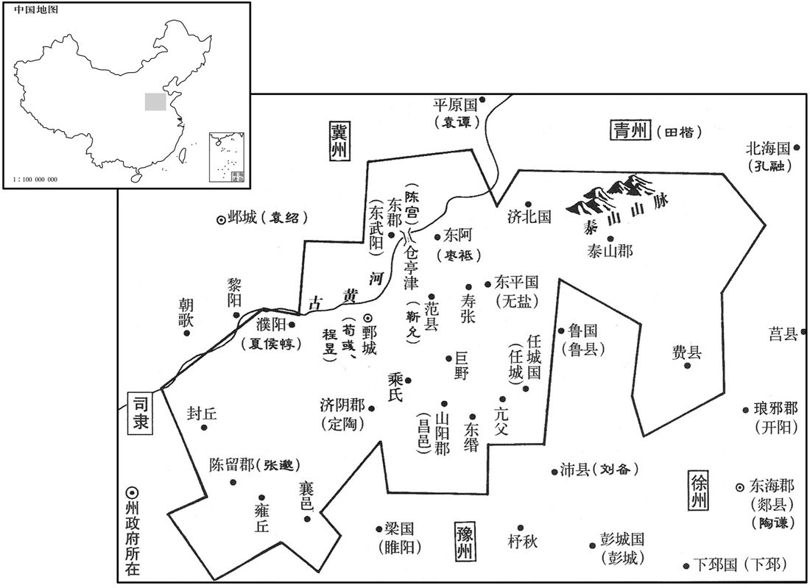
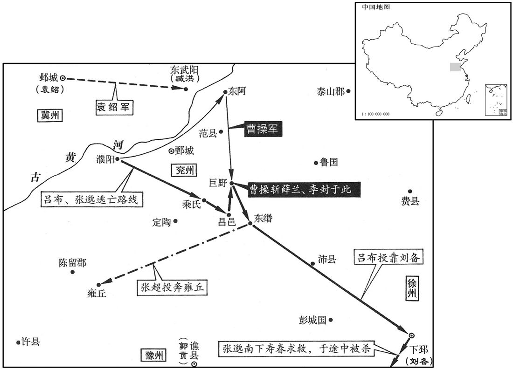
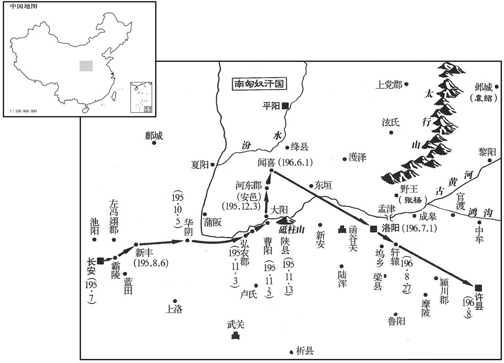
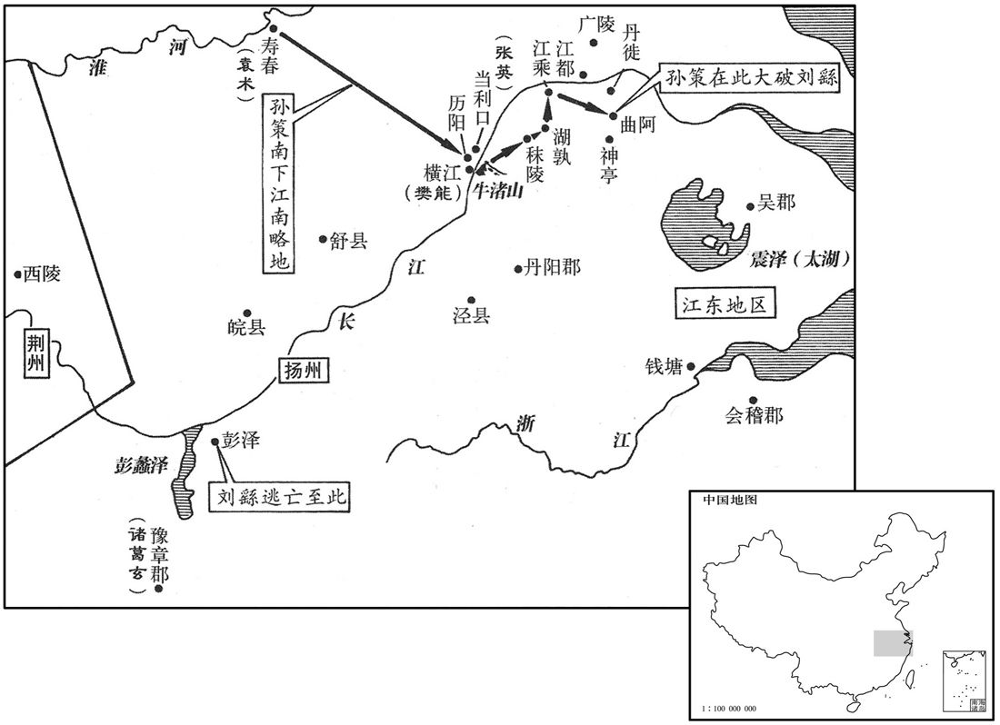
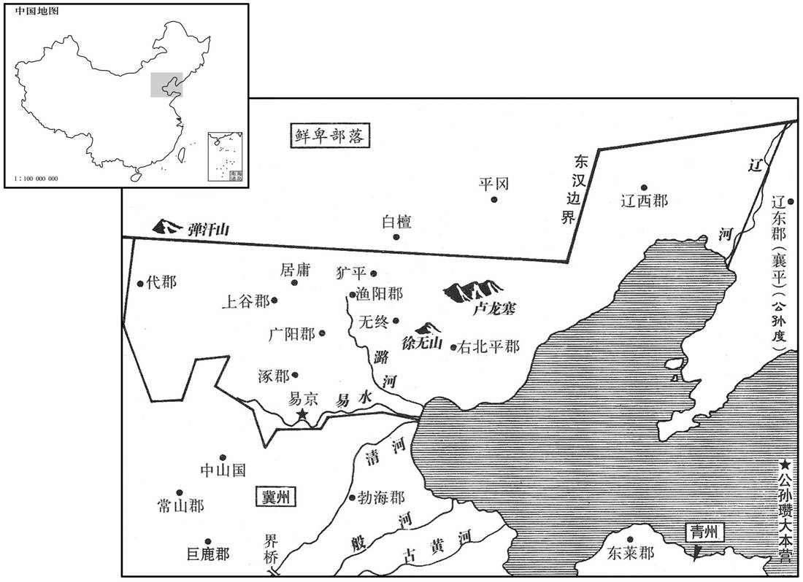

卷次与人物目录 / 卷61
资治通鉴 · 卷第六十一【汉纪五十三】
公元194年至公元195年 · 原文、白话与胡三省注
本页按胡注本编排保存全卷内容。白话采用本站所据译本，未可靠对应的内容另列说明；事件标题用于定位，并非原书文字。
本卷共87段原文，87段有译文对应，0段缺译或待核对。
卷第六十一【汉纪五十三】起瘀逢淹茂（甲戌），尽旃蒙大渊献（乙亥），凡二年。
卷首原文与注释
孝献皇帝丙
公元194年 · 汉孝献皇帝兴平元年
兴平元年〔（甲戌、一九四）〕
上传原文的注释括号有异常，字符原样保留；无法可靠划分的段落默认全文显示。
本年事件索引（现代整理）
- 大赦
- 灵帝行冠礼
- 灵帝追尊生母王夫人为灵怀皇后
- 陶谦求援，刘备转投陶谦并屯兵小沛
- 马腾反叛李傕未成，转与韩遂合兵
- 曹操再攻陶谦，张邈迎吕布入兖州
- 曹操念及张邈旧情，张邈仍与陈宫谋叛
- 高柔预见张邈将叛，举族避往河北
- 陈宫联合张邈等迎吕布为兖州牧
- 吕布占据濮阳，荀彧、夏侯惇稳住鄄城
- 荀彧出城劝退郭贡，避免其助吕布攻城
- 程昱说服范令允守城，平定泛嶷取范之变
- 徐众批评允不顾母亲安危，认为曹操应遣其归家
- 程昱守住东阿三城，曹操回师进攻吕布
- 郭汜、樊稠等开府专权，三公荐举反遭排挤
- 河西四郡获准另设雍州
- 京师两次地震
- 日食
- 杨彪任太尉
- 杨定任安西将军
- 关中大饥，人相食，侯汶核实赈粮后救活饥民
- 郭汜、樊稠击破进犯冯翊的羌人
- 曹操陷入吕布重围，典韦率兵杀退敌军
- 曹操诱吕布交战，乘蝗灾与饥荒退回鄄城
- 程昱劝曹操勿依附袁绍，保住兖州基业
- 淳于嘉免司徒，赵温接任
- 刘焉入蜀后去世，刘璋继任益州牧
- 陶谦去世，徐州士民迎刘备接任
- 马日磾受袁术羞辱，病愤而死
- 孙策与周瑜结交，孙坚死后孙策立志复兴家业
- 孙策投靠袁术，攻破庐江后更失所望
- 刘繇任扬州刺史，驱逐袁术任用的吴景、孙贲
春，正月，辛酉，赦天下。
春季，正月，辛酉（十三日），大赦天下。
甲子，帝加元服。
甲子（十六日），献帝举行加冠礼。
二月，戊寅，有司奏立长秋宫。诏曰：「皇妣宅兆未卜，〔孝经：卜其宅兆而安厝之。兆，茔域也。〕何忍言后宫之选乎！」壬午，三公奏改葬皇妣王夫人，追上尊号曰灵怀皇后。〔王夫人死，见五十八卷灵帝光和四年。皇后纪曰：改葬文昭陵。上，时掌翻。〕
二月，戊寅（初一），有关部门奏请献帝选立皇后。献帝下诏说：“我母亲安葬的地方还未定，怎么忍心谈挑选后妃的事呢？”壬午（初五），三公上奏，请将献帝的母亲王美人改葬到灵帝之陵，并追加尊号，称“灵怀皇后”。
陶谦告急于田楷，楷与平原相刘备救之。备自有兵数千人，谦益以丹阳兵四千，备遂去楷归谦，谦表为豫州刺史，屯小沛。〔沛国，治相县，而沛自为县，属沛国，时人谓沛县为小沛。由此时呼备为刘豫州。豫州刺史本治谯，备领刺史而屯小沛。按此时又有豫州刺史郭贡，朝命不行，私相署置者也。〕曹操军食亦尽，引兵还。
徐州牧陶谦向青州刺史田楷告急，田楷与平原国相刘备率兵去援救他。刘备拥有自己的军队数千人，陶谦又增拨丹阳郡兵士四千名归他指挥，于是刘备就脱离田楷，投奔陶谦。陶谦上表推荐刘备担任豫州刺史，驻扎在小沛。正好曹操军粮也已告尽，率军撤回兖州。
马腾私有求于李傕，〔傕，古岳翻。〕不获而怒，欲举兵相攻；帝遣使者和解之，不从。韩遂率众来和腾、傕，既而复与腾合。〔遂知傕之不足与也。复，扶又翻。〕谏议大夫种卲、侍中马宇、左中郎将刘范谋使腾袭长安，己为内应，以诛傕等。壬申，腾遂勒兵屯长平观。〔种，音冲。观，古玩翻。〕卲等谋泄，出奔槐里。傕使樊稠、郭汜及兄子利击之，腾遂败走，还凉州。又攻槐里，卲等皆死。庚申，诏赦腾等。〔傕等力不能制腾，遂因下诏赦之。〕夏，四月，以腾为安狄将军，遂为安降将军。〔二将军号，一时暂置耳，后世不复置。降，户江翻。〕
两版字句有差异，建议核对原文。
征西将军马腾为私事有求于李，因未得到满足而大怒，打算部署军队进攻李。献帝派遣使者进行调解，马腾不肯听从。韩遂率军从金城郡来调解马腾与李的纠纷，结果反而又与马腾联合。谏议大夫种邵、侍中马宇、左中郎将刘范策划让马腾进袭长安，自己做内应，以诛灭李等人。壬申（疑误），马腾、韩遂率军进驻长平观。种邵等人的计划泄露，他们便从长安出逃，跑到槐里。李派樊稠、郭汜及自己的侄子李利发动进攻，马腾、韩遂兵败退回凉州。樊稠等又进攻槐里，种邵等人全都被杀。庚申（疑误），下诏赦免马腾等人。
夏季，四月，任命马腾为安狄将军，韩遂为安降将军。
曹操使司马荀彧、寿张令程昱守甄城，〔甄城县，属济阴郡。水经注曰：沇州旧治。魏武创业始于此。河上之邑，最为峻固。甄，当作「鄄」。续汉志：兖州刺史治昌邑。宋白曰：汉献帝于鄄城置兖州。盖曹操以刺史始治此。〕复往攻陶谦，〔复，扶又翻。〕遂略地至琅邪、东海，所过残灭；还击破刘备于郯东。谦恐，欲走归丹阳。〔谦，丹阳人也。〕会陈留太守张邈叛操迎吕布，操乃引军还。〔还，从宣翻，又如字。〕
曹操委派司马荀、寿张县令程昱留守鄄城，自己再次前往徐州进攻陶谦，于是沿途攻掠，直到琅邪、东海，所过之处受到严重破坏。大军返回，又在郯县以东击败刘备的军队。陶谦震恐，打算逃回丹阳。正在这时，陈留太守张邈背叛曹操，迎接吕布入兖州，于是曹操撤军，回救兖州。
初，张邈少时，好游侠，〔少，诗照翻。好，呼到翻。侠，户颊翻。〕袁绍、曹操皆与之善。及绍为盟主，有骄色，〔盟主，事见五十九卷初平元年。〕邈正议责绍；绍怒，使操杀之。操不听，曰：「孟卓，亲友也，是非当容之。今天下未定，柰何自相危也！」操之前攻陶谦，〔见上卷上年。〕志在必死，敕家曰：「我若不还，往依孟卓。」后还见邈，垂泣相对。〔泣，垂泪也。〕
起初，张邈年轻时，行侠仗义，袁绍、曹操都与他友善。及至袁绍当上讨伐董卓联军的盟主，待人接物态度傲慢，张邈义正辞严地责备袁绍。袁绍恼羞成怒，让曹操去杀张邈。曹操不肯听从，说：“张邈是亲近的朋友，即使他有不对的地方，也该宽容。如今天下尚未安定，怎么能自相残杀呢？”曹操第一次进攻陶谦时，决心战死，曾命令家中妻小说：“我如果不能生还，他们就去投靠张邈。”后来曹操回来见到张邈，两人相对流下眼泪。
陈留高柔谓乡人曰：「曹将军虽据兖州，本有四方之图，未得安坐守也。而张府君恃陈留之资，将乘间为变，〔间，古苋翻。〕欲与诸君避之，何如﹖」众人皆以曹、张相亲，柔又年少，不然其言。柔从兄干自河北呼柔，柔举宗从之。〔高干从袁绍在河北。〕
陈留人高柔对同乡人说：“曹操虽然目前占有兖州，但他本有兼并天下的图谋，不会安心坐守这块地盘。而张邈倚仗陈留郡作资本，将会找机会另作打算。我想和你们一同避开争战，怎么样？”众人都认为曹操与张邈互相亲善，而高柔年纪又轻，不相信他的预言。恰好高柔的堂兄高干从河北召唤高柔，高柔带着全族人前往河北依附高干。
吕布之拾袁绍从张杨也，〔事见上卷上年。〕过邈，〔过，工禾翻。〕临别，把手共誓；绍闻之，大恨。邈畏操终为绍杀己也，〔为，于伪翻。〕心不自安。前九江太守陈留边让尝讥议操，操闻而杀之，并其妻子。让素有才名，由是兖州士大夫皆恐惧。陈宫性刚直壮烈，内亦自疑，乃与从事中郎许汜、王楷及邈弟超共谋叛操。宫说邈曰：〔说，输芮翻；下同。〕「今天下分崩，雄杰并起，君以千里之众，当四战之地，抚剑顾盼，亦足以为人豪，而反受制于人，不亦鄙乎！今州军东征，〔谓操兵征徐州也。〕其处空虚，吕布壮士，善战苶前，若权迎之，共牧兖州，观天下形势，俟时事之变，此亦纵横之一时也。」〔纵，子容翻。〕邈从之。
吕布离开袁绍去投奔张杨时，路过陈留郡，拜访张邈，临别时，一同握手盟誓。袁绍知道这一消息后，大为痛恨。张邈担心曹操终究会为袁绍谋害自己，心中不能自安。前任九江太守、陈留人边让曾经讥讽过曹操，曹操知道后，将边让及其妻子儿女全部杀死。边让一向才华出众，声望很高，因此兖州地区的士大夫全都感到恐惧。陈宫性情梗直刚烈，心里也疑虑不安，就与从事中郎许汜、王楷以及张邈的弟弟张超一起策划背叛曹操。陈宫对张邈进言：“如今天下分袭，豪杰纷纷崛起，您拥有广达千里的疆土民众，又处于四方必争的冲要之地，手抚佩剑，左右顾盼，也足以成为人中豪杰。却反而受制于人，不是太鄙陋了吗？如今曹操统率大军东征，州中空虚，吕布是个壮士，能征善战，无人可比，如果暂时迎接他来，共同主持兖州事务，观察天下的形势，等待时局变化，这也是您纵横捭阖的一个时机。”张邈听从了陈宫的意见。
时操使宫将兵留屯东郡，遂以其众潜迎布为兖州牧。布至，邈乃使其党刘翊告荀彧曰：「吕将军来助曹使君击陶谦，宜亟供其军食。」众疑惑，彧知邈为乱，即勒兵设备，急召东郡太守夏侯惇于濮阳；惇来，布遂据濮阳。〔濮，博木翻。〕时操悉军攻陶谦，留守兵少，〔少，诗沼翻。〕而督将、大吏多与邈、宫通谋，〔督将，领兵；大吏，通掌州郡事者。将，即亮翻。〕惇至，其夜，诛谋叛者数十人，众乃定。
当时曹操派陈宫率兵留守东郡，于是陈宫就率军秘密迎接吕布来担任兖州牧。吕布到达后，张邈就派他的党羽刘翊告诉荀说：“吕将军来帮助曹刺史进攻陶谦，应该赶快供给他军粮。”众人感到疑惑，荀知道张邈将要背叛，就立即部署军队进行防守，并急速征召在濮阳的东郡太守夏侯。夏侯前来救援，吕布便占据濮阳。当时曹操把所有的军队都带去进攻陶谦，留守的兵很少，而且大部分将领和主要官吏都参与了张邈、陈宫的阴谋。夏侯赶到以后，当天夜里，就诛杀了几十个参与叛变阴谋的官员，情势才稳定下来。
豫州刺史郭贡率众数万至城下，或言与吕布同谋，众甚惧。贡求见荀彧，彧将往，惇等曰：「君一州镇也，〔谓一州倚之为重也。〕往必危，不可。」彧曰：「贡与邈等，分非素结也，〔分，扶问翻。〕今来速，计必未定，及其未定说之，纵不为用，可使中立。〔贤曰：不令其有所去就也。说，输芮翻；下同。〕若先疑之，彼将怒而成计。」贡见彧无惧意，谓鄄城未易攻，〔易，以豉翻。〕遂引兵去。
豫州刺史郭贡率领数万人的大军来到鄄城城下，有谣言说他与吕布合谋，城中众人十分恐惧。郭贡要求会见荀。荀准备出城会面，夏侯等劝阻他说：“你是一州的主持人，出城必定有危险，不能去。”荀说：“郭贡与张邈等人并不是老交情，如今来得这样迅速，必是还未定好策略，趁他尚未定好策略时说服他，即便他不能帮助我们，也可使他保持中立。如果先疑心他，将使他在一怒之下打定主意，投到敌人那边”郭贡看到荀并恐惧之心，认为鄄城不易攻破，于是率军离去。
是时，兖州郡县皆应布，唯鄄城、范、东阿不动。〔贤曰：范县属东郡，今濮阳县。东阿县属东郡，今济州县也。〕布军降者言：「陈宫欲自将兵取东阿，又使泛嶷取范。」〔降，户江翻。泛，符咸翻。皇甫谧云：本姓凡氏，遭秦乱，避地于泛水，因氏焉。嶷，鄂力翻。〕吏民皆恐。程昱本东阿人，彧谓昱曰：「今举州皆叛，唯有此三城，宫等以重兵临之，非有以深结其心，三城必动。君，民之望也，直往抚之。」昱乃归过范，说其令斩允曰：〔过，工禾翻。说输芮翻。靳，居焮翻，姓也。战国楚有幸臣靳尚。〕「闻吕布执君母、弟、妻子，孝子诚不可为心。今天下大乱，英雄并起，必有命世能息天下之乱者，此智者所宜详择也。得主者昌，失主者亡。陈宫叛迎吕布而百城皆应，似能有为；然以君观之，布何如人哉﹖夫布麤中少亲，刚而无礼，匹夫之雄耳。宫等以劫假合，不能相君也；〔相，如字。言不能相与定君臣之分也。〕兵虽众，终必无成。曹使君智略不世出，殆天所授；君必固范，我守东阿，则田单之功可立也。〔田单，事见五卷周赮王三十六年。〕孰与违忠从恶而母子俱亡乎﹖唯君详虑之！」允流弟曰：「不敢有贰心。」时泛嶷已在县，允乃见嶷，伏兵刺杀之，〔刺，七亦翻。〕归，勒兵自守。
当时，兖州属下的郡、县全都响应吕布，只有鄄城、范县、东阿县没有动摇。吕布军中归降的人说：“陈宫准备自己率军攻取东阿，又派汜嶷攻取范县。”官民全都感到恐慌。程昱本是东阿人，荀对他说：“如今全州都已背叛，只剩下了这三个城。陈宫等派大军攻城，如果我们不能紧密地团结民心，这三城必定会动摇。你在东阿人民中声望很高，应该前去进行安抚。”于是，程昱离开鄄城返回东阿，在途中经过范县，劝说范县县令靳允道；“听说吕布已将您的母亲、弟弟和妻子儿女都抓了起来，孝子的心情自然十分沉重。如今天下大乱，英雄纷纷崛起，其中必定会有一位主宰时代命运安定天下的人，这是智者应该对比仔细选择的。跟对主人，才能兴旺；跟错主人，就会败亡。陈宫背叛曹操，迎接吕布，而诸城全都响应，似乎能有所作为。然而据您观察，吕布是个什么样的人？吕布为人粗暴而很少与人亲近，又刚愎无礼，不过是个勇猛的匹夫而已。陈宫等人在目前形势下与他联合，只是互相利用，不会奉吕布为主，因此，他们虽然兵多，但终究不会成事。曹操的智慧谋略盖世，简直是上天特别授予他的。您一定要坚守范县，我来守住东阿，就可以立下田单恢复齐国那样的大功。这样，难道不比你违背忠义去跟随恶人，结果母子都被杀死要好吗？请您好好考虑！”靳允流着泪说：“我不敢有二心。”这时，汜嶷已率兵进入范县，靳允便出来会见汜嶷，用伏兵将汜嶷刺杀。回城后，部署军队坚守。
徐众评曰：允于曹公未成君臣；母至亲也，于义应去。卫公子开方仕齐，积年不返，管仲以为不怀其亲，安能爱君！〔齐桓公问管仲曰：「开方何如﹖」对曰：「弃亲以适君，非人情，难亲。」〕是以求忠臣必于孝子之门；允宜先救至亲。徐庶母为曹公所得，刘备遣庶归北，欲为天下者恕人子之情也；〔事见后六十五卷建安十三年。〕曹公亦宜遣允。
徐众评曰：靳允与曹操之间并没有确立君臣关系，而母亲是至亲，依照道义，靳允应该辞官去跟随母亲。春秋时期，卫国公子开方到齐国当官，多年没有返回家乡，官仲认为，不惦念自己父母的人，又怎么能爱君主！所以，访求忠臣一定要到孝子之门。靳允应该首先去营救自己的至亲骨肉。徐庶的母亲被曹操俘虏，刘备就送徐庶返回北方，以便营救他的母亲。想要掌握天下的人，应当体恤作儿子的孝顺之情。而曹操也应该让靳允离开。
昱又遣别骑绝仓亭津，〔水经注：河水过东阿县北。河水于范县东北流，为仓亭津。述征记曰：仓亭津在范县界，去东阿六十里。〕陈宫至，不得渡。昱至东阿，东阿令颍川枣袛已率厉吏民拒城坚守，〔颍川文士传：枣氏本姓棘，避难改焉。〕卒完三城以待操。〔卒，子恤翻。〕操还，执昱手曰：「微子之力，吾无所归矣。」表昱为东平相，屯范。吕布攻鄄城不能下，西屯濮阳。曹操曰：「布一旦得一州，不能据东平，断亢父、泰山之道，乘险要我，〔东平国，当亢父、泰山之道。亢父本属东平，章帝元和元年，分属任城。贤曰：亢父故城在今兖州任城县。断，丁管翻。亢父，音抗甫。要，一遥翻。〕而乃屯濮阳，吾知其无能为也。」乃进攻之。
程昱又派遣一支骑兵部队，截断黄河上的仓亭津渡口，陈宫率军到河边，无法渡河。程昱来到东阿，东阿县令、颖川人枣祗已率领吏民在城墙上坚守。他们终于守住这三城等到曹操大军的归来。曹操回来后，握着程昱的手说：“假若不是你尽力，我就无家可归了。”曹操上表推荐程昱为东平国相，驻在范县。吕布进攻鄄城，未能攻克，就向西移驻濮阳。曹操说：“吕布一下子得到一州的地盘，却不能占据东平，切断亢父、泰山的要道，利用险要的地势来对抗我，反而回驻濮阳，我知道他没有多大作为。”于是进攻吕布。
五月，以扬武将郭汜为后将军，安集将军樊稠为右将军，〔安集将军，亦一时暂置。〕并开府如三公，合为六府，〔时太傅马日磾出使，李傕以车骑将军开府，汜、稠又开府，与三公合为六府。〕皆参选举。李傕等各欲用其所举，若一违之，便忿愤喜怒，主者患之，乃以次第用其所举。〔主者，盖尚书也。〕先从傕起，汜次之，稠次之，三公所举，终不见用。
五月，任命扬武将军郭汜为后将军，安集将军樊稠为右将军，都和三公一样开府，设置僚属。加上先前已享受这种待遇的车骑将军李，与三公的府署合称为六府，都参预全国官员的推荐与选举。李等人都要任用自己所推荐的人选，要是一有违背，就大发脾气。有关机构无法应付，只好依照次序任用他们所推荐的人选，先从李推荐的开始，其次是郭汜，再次是樊稠，三公所推举的人才，根本没有被任用的机会。
河西四郡以去凉州治远，隔以河寇，〔淑州刺史本治汉阳郡冀县，时寇贼繁兴，遂与河西隔绝。河寇盖群盗阻河为寇者。〕上书求别置州。六月，丙子，诏以陈留邯郸商为雍州刺史，典治之。〔风俗通：邯郸以国为姓。余谓邯郸非国也，盖以邑为姓。左传，晋有邯郸午。时置雍州，治武威。治，直之翻。〕
河西的敦煌、酒泉、张掖、武威四郡，因为距离凉州官府所在地冀县太远，而且交通又被盗寇阻断，因此上书请求另外设置一州。六月，丙子（初一），下诏设置雍州，任命陈留人邯郸商为雍州刺史，治理河西四郡事务。
丁丑，京师地震；戊寅，又震。
丁丑（初二），京师长安发生地震。戊寅（初三），再次发生地震。
乙酉晦，日有食之。
乙酉晦（疑误），出现日食。
戊午，以太常杨彪为太尉，录尚书事。
戊午（十三日），任命太常杨彪为太尉，主持尚书事务。
甲子，以镇南将军杨定为安西将军，开府如三公。
甲子（十九日），任命镇南将军杨定为安西将军，允许他开府置僚属，待遇与三公相同。
自四月不雨至于是月，谷一斛直钱五十万，长安中人相食。帝令侍御史侯汶出太食米豆为贫人作糜，〔汶，音闻。糜，粥也。为，于伪翻。〕饿死者如故。帝疑禀赋不实，〔禀，给也。赋，与也。〕取米豆各五升于御前作糜，得二盆。乃杖汶五十，于是悉得全济。〔观此，则献帝非昏蔽而无知也，然终以失天下者，威权去己而小惠不足以得民也。〕
从四月到七月，一直没有降雨，谷价一斛值五十万钱。因为饥荒，长安城中的百姓出现人吃人的现象。献帝命令侍御史侯汶取出太仓中储存的米、豆为贫民熬粥，进行施舍。可是饿死的人仍像过去一样多。献帝怀疑有人从中作弊，便命令用米、豆各五升，在自己面前熬粥，煮出两盆。于是，责打侯汶五十棍。贫民才都得以保全性命。
八月，冯翊羌寇属县，郭汜、樊稠等率众破之。
八月，冯翊地区的羌族人进攻属下各县，郭汜、樊稠率军将其击败。
吕布有别屯在濮阳西，曹操夜袭破之，未及还；会布至，身自搏战，自旦至日昳，〔昳，徒结翻，日昃也。〕数十合，相持甚急。操募人陷陈，〔陈，读曰阵。〕司马陈留典韦将应募者进当之，〔典姓，韦名。〕布弓弩乱发，矢至如雨，韦不视，谓等人曰：〔等人者，立等以募人，及等者，谓之等人。或曰：等人，一等应募之人也。〕「虏来十步，乃白之。」等人曰：「十步矣。」又曰：「五步乃白。」等人惧，疾言「虏至矣！」韦持戟大呼而起，〔呼，火故翻。〕所抵无不应手倒者，布众退。会日暮，操乃得引去；拜韦都尉，令常将亲兵数百人，绕大帐左右。
吕布有一支部队驻在濮阳以西，曹操乘夜袭击，将其击溃。还未来得及撤回，正遇上吕布前来援救。吕布亲自冲锋陷阵，自清晨一直战到太阳偏西，交战数十回合，两军相持不下，十分危急。曹操召募壮士去突击敌阵，司马、陈留人典韦率领那些应募壮士在阵前抵御吕布军队的进攻。吕布军中弓弩齐发，箭如雨下。典韦对敌人连看也不看，对那些壮士说：“敌人来到距我们十步的地方，再告诉我。”壮士们说：“已经十步了。”典韦又说：“相距五步时再告诉我。”那些壮士们见敌人已到面前，大为惊惶，赶快喊：“敌人已经到了！”典韦手执铁戟，大喊而起，冲入敌阵，对面的敌人无不应手而倒，吕布的军队后撤。这时天色已晚，曹操才得以率军退回自己的营寨。回营后，曹操提升典韦为都尉，命他平日率领亲兵数百人，在自己的大帐左右负责警卫。
濮阳大姓田氏为反间，〔间，古苋翻。〕操得入城，烧其东门，示无反意。乃战，军败，布骑得操而不识，问曰：「曹操何在﹖」操曰：「乘黄马走者是也。」布骑乃释操而追黄马者。操突火而出，至营，自力劳军，令军中促为攻具，进，复攻之，〔既自力劳军，又促军进攻者，恐既败之后，士气衰沮也。劳，力到翻。复，扶又翻。〕与布相守百余日。蝗虫起，百姓大饿，布粮食亦尽，各引去。九月，操还鄄城。布到乘氏，〔乘氏县，属济阴郡。应劭曰：春秋，鲁败宋师于乘丘，即其地。宋白曰：今济州巨野县西南五十七里乘氏故城是也。乘，绳证翻。〕为其县人李进所破，东屯山阳。
濮阳县的大姓田氏为吕布实行反间计，假意作曹操的内应。曹操得以进入濮阳城后，纵火焚烧所经过的东门，表示自己不再退回。及至与吕布交战，曹军大败，吕布部下的骑士捉到曹操而不认识，问道：“曹操在哪里？”曹操说：“骑黄马逃走的那人，就是曹操。”吕布的骑士就放开曹操，而去追那骑黄马的人。曹操从大火中突围而出，回到营中，亲自慰问军士，命令军中赶快制作攻城用的器械。随即进军，再次攻击濮阳。他与吕布相持一百余天，发生蝗灾，百姓饥馑，吕布的存粮也已吃尽，两军各自撤退。九月，曹操回到鄄城。吕布率军到乘氏县，被乘氏县人李进击败，向东退到山阳。
冬，十月，操至东阿。袁绍使人说操，欲使操遣家居邺；〔说，输芮翻。〕操所失兖州，军食尽，将许之。程昱曰：「意者将军殆临事而惧，不然，何虑之不深也！夫袁绍有并天下之心，而智不能济也；将军自度能为之下乎﹖〔度，徒洛翻。〕将军以龙虎之威，可为之韩、彭邪！今兖州虽残，尚有三城，能战之士，不下万人，以将军之神武，与文若、昱等收而用之，〔荀彧，字文若。〕霸王之业可成也，愿将军更虑之！」操乃止。
冬季，十月，曹操来到东阿县。这时，袁绍派人劝说曹操，想让曹操把家眷送到邺城居住。曹操新近失掉兖州，军中粮食也已吃尽，便准备接受袁绍的建议。程昱说：“大概将军怕是临事畏惧，不然，为什么考虑得这么不深！袁绍有并吞天下的野心，但他的智谋却不足以实现他的野心。将军自己考虑一下，能做他的下属吗？将军以龙虎之威，可以当他的韩信、彭越吗？如今兖州虽已残破，还有三城控制在您的手中，能战的兵士不下万人，凭将军的谋略与武功，再加上荀和我们这些人，齐心协力，是可以成就霸王之业的，愿将军重新考虑！”曹操于是放弃了原来的打算。

十二月，司徒淳于嘉罢，以卫尉赵温为司徒，录尚书事。
十二月，司徒淳于嘉被免职，任命卫尉赵温为司徒，主持尚书事务。
马腾之攻李傕也，刘焉二子范、诞皆死。议郎河南庞羲，素与焉善，乃募将焉诸孙入蜀。〔庞，皮江翻。将，如字，领也，携也，挟也。〕会天火烧城，焉徙治成都，〔刘焉初居鼦竹。〕疽发背而卒。〔说文曰：疽，久痈。〕州大吏赵韪等贪焉子璋温仁，共上璋温仁，共上璋为益州刺史，〔韪，羽鬼翻。上，时掌翻。〕诏拜颍川扈瑁为刺史。〔瑁，音冒。〕璋将沈弥、娄发、甘宁反，击璋，不胜，走入荆州；诏乃以璋为益州牧。璋以韪为征东中郎将，率众击刘表，屯朐铁。〔朐铁县，属巴郡。师古曰：朐，音劬。晋书音义：朐，音蠢。铁，如允翻。贤曰：朐铁故城，在今夔州云安县西，万户故城是也。铁，音闰。刘昫曰：开州盛山县，汉朐铁地。余据今云安军，汉朐铁县地，土地下湿，多朐铁虫，故名。刘禹锡曰：朐铁，蚯蚓也。裴松之曰：如振翻。〕
马腾进攻李时，刘焉的两个儿子刘范、刘诞都被杀死。议郎、河南人庞羲，平时与刘焉友善，便派人带刘焉的孙子们入蜀。这时，原州府所在地绵竹城被雷击引起的大火烧毁，刘焉就把州府移到成都，因背生毒疮而去世。州中主要官员赵韪等贪图刘焉的儿子刘璋性情温和，好施仁义，便一同上表请求朝廷委任刘璋为益州刺史。献帝下诏，任命颖川人扈瑁为益州刺史。刘璋的部将沈弥、娄发、甘宁等人叛变，进攻刘璋，战败，逃入荆州。朝廷对益州事务鞭长莫及，只好下诏任命刘璋为益州刺史。刘璋任命赵韪为征东中郎将，率军进攻刘表，驻守朐。
徐州牧陶谦疾笃，谓别驾东海麋竺曰：〔姓谱：楚大夫受封于南郡麋亭，因以为氏。或言工尹麋之后，以名为氏。〕「非刘备不能安此州也。」谦卒，竺率州人迎备。备未敢当，曰：「袁公路近在寿春，〔袁术，字公路。〕君可以州与之。」典农校尉下邳陈登曰：〔据裴松之注三国志云：陶谦表登为典农校尉。魏志曰：曹公置典农校尉，秩比二千石。盖先已有此官，曹公增其秩耳。〕「公路骄豪，非治乱之主，〔治，直之翻。〕今欲为使君合步骑十万，〔为，于伪翻。〕上可以匡主济民，下可以割地守境；〔观登此言，固未易才也。〕若使君不见听许，登亦未敢听使君也。」北海相孔融谓备曰：「袁公路岂忧国忘家者邪！耱中枯骨，何足介意！〔据陈寿志，备谓竺等曰：「袁公路近在寿春。此君四世五公，君可以州归之。」融言：「耱中枯骨，何足介意。」正为四世五公发也。〕今日之事，百姓与能；天与不取，悔不可追。」〔易曰：人谋鬼谋，百姓与能。言百姓惟能者是与也。前书曰：天与不取，反受其咎。〕备遂领徐州。
徐州牧陶谦病势危重，他对别驾、东海人糜竺说：“除非刘备，不能保护本州的安全。”陶谦去世后，糜竺率领徐州官民迎接刘备。刘备不敢担当此任，说：“袁术近在寿春，你们可以把徐州交给他。”典农校尉、下邳人陈登说：“袁术骄奢横暴，不是能治理乱世的君主。如今，我们打算为您集结起十万步、骑大军，上可以辅佐君王，拯救百姓，下可以割据一方，保守疆土。如果您不答应我们的请求，我们也不敢听从您的建议。”北海国相孔融说：“袁术岂是忧国忘家的人！不过是依仗祖上遗留下的威望，根本不足介意。今天的事情，是百姓选择贤能。这种上天赐予的机会，如果拒绝，后悔就来不及了。”于是刘备接受他们的请求，兼任徐州牧。
初，太傅马日磾与赵岐俱奉使至寿春，〔磾，丁奚翻。〕岐守志不桡，〔桡，奴教翻。〕袁术惮之。日磾颇有求于术，术侵侮之，从日磾借节视之，因夺不还，条军中十余人，使促辟之。日磾从术求去，术留不遣，又欲逼为军师；日磾病其失节，呕血而死。〔杜预曰：病者，以为己病也。〕
当初，太傅马日与赵岐一起奉朝廷使命来到寿春，赵岐严守气节，不肯迁就，袁术对他很敬畏。马日经常有求于袁术，袁术就折辱马日，向他借所持的代表皇帝权力的符节看，乘机夺走不还，又开列了军中十几个人的名单，要马日赶快征召任命。马日向袁术请求离去，袁术扣留不放，又要逼迫他担任军师。马日悔恨自己失去献帝授予的符节，吐血而死。
初，孙坚娶钱唐吴氏，生四男，策、权、翊、匡及一女。坚从军于外，留家寿春。策年十余岁，已交结知名。舒人周瑜与策同年，亦英达夙成，〔夙，早也。〕闻策声问，自舒来造焉，便推结分好，造，七到翻。分，扶问翻。推分而结好也。好，呼到翻；下同。〕劝策徙居舒；策从之。瑜乃推道旁大宅与策，〔推，吐雷翻。〕升堂拜母，有无通共。及坚死，策年十七，还葬曲阿；〔曲阿县，属吴郡。贤曰：今润州县。余据曲阿，古云阳县也。秦时言其地有天子气，始皇凿北坑以败其势，截直道使阿曲，故谓之曲阿。杜佑曰：曲阿，今丹阳郡丹阳县。〕已乃渡江，居江都，结纳豪俊，有复雠之志。〔以父坚为黄祖所杀也。〕
当初，孙坚娶钱唐人吴氏为妻子，生下四个儿子，即孙策、孙权、孙翊、孙匡，此外还有一个女儿，孙坚在外征战，把家眷留在寿春。孙策十余岁时，已开始结交当地知名之士。舒县人周瑜与孙策同岁，也英武豪迈，少年早成，听到孙策的名声，便从舒县前来拜访，两人一见如故，互相推心置腹。周瑜劝孙策移居舒县，孙策同意，周瑜就把临近道路的一座大宅院让给孙策居住。周瑜还到内堂去拜见了孙策的母亲，两家互通有无。孙坚死时，孙策十七岁，把父亲的棺木送回老家曲阿去安葬。安葬后，他渡过长江，住在江都，结交天下豪杰，立志为父亲报仇。
丹阳太守会稽周昕与袁术相恶，〔会，工外翻。〕术上策舅吴景领丹阳太守，〔上，时掌翻。〕攻昕，夺其郡，以策从兄贲为丹阳都尉。〔从，才用翻。下贤从同。〕策以母弟托广陵张纮，径到寿春见袁术，涕泣言曰：「亡父昔从长沙入讨董卓，与明使君会于南阳，胴盟结好，不幸遇难，勋业不终。〔事见五十九卷初平元年、二年。难，乃旦翻。〕策感惟先人旧恩，欲自凭结，愿明使君垂察其诚！」术甚奇之，然未肯还其父兵，谓策曰：「孤用贵舅为丹阳太守贤从伯阳为都尉，〔舅，谓吴景。孙贲，字伯阳。〕彼精兵之地，〔丹阳号为天下精兵处。〕可还依召募。」策遂与汝南吕范及族人孙河迎其母诣曲阿，依舅氏，因缘召募，得数百人；而为泾县大帅郎所袭，〔泾县，属丹阳郡。贤曰：今宣州县。姓谱：祖，商祖己之后。帅，所类翻。〕几至危殆，于是复往见术。〔几，居希翻。复，扶又翻；下同。〕术以坚余兵千余人还策，表拜怀义校尉。策骑士有罪，逃入术营，隐于内貛，策指使人就斩之，讫，诣术谢。〔谢入术营专杀也。〕术曰：「兵人好叛，当共疾之，〔好，呼到翻。〕何为谢也！」由是军中益畏惮之。术初许以策为九江太守，已而更用丹阳陈纪。〔更，工衡翻。〕后术欲攻徐州，从庐江太守陆康求米三万斛；康不与。术大怒，遣策攻康，谓曰：「前错用陈纪，〔错，误也。〕每恨本意不遂，今若得康，庐江真卿有也。」策攻康，拔之，术复用其故吏刘勋为守；〔复，扶又翻。〕策益失望。
丹阳郡太守、会稽人周昕与袁术互相敌视，袁术上表推荐孙策的舅父吴景兼任丹阳郡太守，进攻周昕，夺下丹阳郡，将孙策的堂兄孙贲任命为丹阳都尉。孙策把母亲和弟妹托付给广陵人张，自己直接到寿春去见袁术，流着泪对袁术说：“我已故的父亲当年从长沙出发讨伐董卓，与您在南阳相会，共结盟好。他不幸中途遇难，没能完成功业。我感念您对我父亲的旧恩，愿继续为您效力，请您明察我的一征诚心！”袁术对孙策的谈吐举止，很感惊异，但不肯交还他父亲原来统率的队伍，对他说：“我已任用你舅父吴景为丹阳郡太守，你堂兄孙贲为都尉，丹阳郡是出精兵的地方，你可以回去依靠他们的力量召募兵马。”孙策就与汝南人吕范、本族人孙河将母亲接到曲阿，依靠舅父吴景，乘机在当地募兵，得到数百人。但他遭到泾县的土豪祖郎的袭击，几乎被杀。于是他再次去见袁术。袁术把孙坚旧部千余人还给孙策，向朝廷上表推荐他担任怀义校尉。孙策部下的一名骑士犯罪后逃入袁术大营，隐藏在里面的马房中，孙策派人进去当场将骑士处斩，然后，他拜见袁术，表示谢罪。袁术说：“有些士兵喜欢叛变，我与你一样痛恨这种行为，你为什么要谢罪！”从此以后，袁术军中对孙策更加畏惧。袁术最初应许孙策为九江郡太守，但此后却改用丹阳人陈纪。后来，袁术准备进攻徐州，要求庐江郡太守陆康提供三万斛米，陆康不给。袁术大怒，派孙策去进攻陆康，对孙策说：“以前我错用陈纪为九江太守，每以不合本意而感到遗憾。这次你如果能战胜陆康，庐江郡就真的归你所有了。”孙策进攻陆康，攻下庐江郡府。但是袁术又任用自己的部下刘勋为庐江郡太守，孙策对他更加失望。
侍御史刘繇，岱之弟也，素有盛名，诏书用为扬州刺史；州旧治寿春〔续汉志：扬州本治历阳。盖中世以后徙治寿春也。〕术已据之，繇欲南渡江，吴景、孙贲迎置曲阿。及策攻庐江，繇闻之，以景、贲本术所置，惧为袁、孙所并，遂构嫌隙，迫逐景、贲退屯历阳，〔历阳县属九江郡，今和州。〕繇遣将樊能、于糜屯横江，张英屯当利口以拒之。〔横江度在今和州，正对江南之采石，即今之杨木渡口。当利浦，在今和州东十二里。〕术乃自用故吏惠衢为扬州刺史，〔惠，姓也。战国时梁有惠施。〕以景为督军中郎将，与贲共将兵击英等。
侍御史刘繇是已故兖州刺史刘岱的弟弟，一向声望很高，朝廷下诏任命他为扬州刺史。扬州州府以前设在寿春，但这时已被袁术占据，刘繇想把州府设在长江以南，吴景、孙贲就迎接刘繇到曲阿。及至孙策进攻庐江，刘繇听到消息后，认为吴景、孙贲本是袁术安置的人，害怕自己被袁术、孙策等所兼并，于是产生敌意，将吴景、孙贲等赶走。吴景、孙贲退守历阳，刘繇派部将樊能、于糜驻横江，张英驻当利口以防备他们。袁术知道后，就自己委派旧部下惠衢为扬州刺史，委任吴景为督军中郎将，与孙贲等率军一起进攻张英等。
译本中未与胡注本可靠对应的内容
以下另列供核对版本差异，不并入胡注本正文。
译本所附古文
[12]秋，七月，壬子，太尉朱俊免。
译本白话
秋季，七月，壬子（初七），太尉朱俊被免职。
公元195年 · 汉孝献皇帝兴平二年
二年〔（乙亥、一九五）〕
上传原文的注释括号有异常，字符原样保留；无法可靠划分的段落默认全文显示。
本年事件索引（现代整理）
- 大赦
- 曹操在定陶击败吕布
- 袁绍任右将军
- 李傕、郭汜争权内斗，关中百姓几近饿尽
- 李傕杀害樊稠，诸将彼此猜忌
- 郭汜妻离间郭汜、李傕，两军交战
- 李傕挟持献帝入营纵火，扣留公卿为质
- 灵帝立伏寿为皇后
- 郭汜、李傕互相攻伐，献帝被困
- 李傕迁献帝至北坞断绝供给，苛待皇帝与群臣
- 李傕祭拜董卓，自以为深得献帝欢心
- 皇甫郦奉命调解李傕、郭汜，直斥李傕专权
- 李傕升任大司马
- 荀彧劝曹操先定兖州、勿舍近求远，曹操采纳
- 曹操伏击吕布大破其军，吕布逃投刘备
- 吕布以兄弟之礼待刘备，刘备对其反复无常心存戒备
- 张济调停李傕、郭汜，二人暂时讲和
- 献帝离开长安赴弘农，郭汜兵马拦桥
- 张济、郭汜、杨定、杨奉等受封列侯
- 郭汜反复阻挠献帝东行，最终放弃挟持计划
- 曹操攻克雍丘，张邈途中被部下杀害
- 曹操任兖州牧
- 夏育、高硕谋劫献帝西行，杨定、董承护驾突围
- 段煨供奉献帝，杨定等听信谗言疑其谋反
- 杨奉等攻打段煨营地，献帝拒绝下诏，最终命双方和解
- 李傕、郭汜再劫献帝，弘农之战大败护驾军
- 董承、杨奉联络白波军等援兵，击败李傕、郭汜
- 献帝再度东行，李傕等追击，百官死伤惨重
- 献帝一行渡河逃命，宫人、百姓遭劫掠冻死
- 献帝抵达安邑，张杨、王邑等进献粮帛
- 献帝寄居篱笆围成的营地，任由士兵围观
- 韩融与李傕、郭汜议和，公卿获释但粮食耗尽
- 张杨入朝劝献帝还洛阳，诸将反对
- 长安空城四十余日，关中百姓流亡相食
- 沮授劝袁绍迎献帝以号令诸侯，郭图等反对
- 孙策借兵袁术，攻破横江、当利
- 孙策严禁军队劫掠，百姓争相供军
- 孙策攻取牛渚、秣陵等地，进逼刘繇
- 太史慈与孙策神亭交战，双方不分胜负
- 孙策攻占曲阿，兵力迅速扩充至两万余人
- 孙策采纳吕范整军建议，军纪严明
- 孙策重用张纮、张昭处理军政事务
- 袁术任袁胤为丹阳太守，周尚、周瑜返回寿春
- 许劭劝刘繇转往豫章，避免进入孙策势力范围
- 笮融侵吞粮运、滥杀太守，最终被刘繇讨杀
- 笮融杀豫章太守朱皓，刘繇将其击溃
- 朱治驱逐许贡，占据吴郡
- 曹操攻陷雍丘，张超自杀，张氏被灭族
- 臧洪回绝袁绍劝降，斥责袁绍背弃汉室
- 臧洪城中粮尽仍不降，城破后被袁绍处死
- 陈容当面斥责袁绍杀害臧洪，也被杀害
- 公孙瓒恃强虐民，亲近商贩而排斥士人
- 鲜于辅联合乌桓、鲜卑击败公孙瓒，收复幽州诸郡
- 公孙瓒退守易京高楼，自信囤粮足以坐观天下
- 南匈奴单于于扶罗去世，弟呼厨泉继位
春，正月，癸丑，赦天下。〔考异曰：袁纪作「癸酉」。按长历，是月癸卯朔，无癸酉，今从范书。〕
春季，正月，癸丑（十一日），大赦天下。
曹操败吕布于定陶。〔败，补遭翻。〕
曹操在定陶击败吕布。
诏即拜袁绍为右将军。〔即拜者，就拜之也。时绍在邺，就邺拜之。考异曰：袁纪作「后将军」。今从范书。〕
朝廷下诏派使者到邺城，就地任命袁绍为右将军。
董卓初死，三辅民尚数十万户，李傕等放兵劫掠，加以饥馑，二年间，民相食略尽。李傕、郭汜、樊稠各相与矜功争权，欲鬬者数矣，〔数，所角翻。〕贾诩每以大体责之，虽内不能善，外相含容。
董卓刚死的时候，三辅地区的百姓还有数十万户。由于李等人纵兵抢掠，加上饥荒，百姓吃人肉充饥，两年之间，几乎死尽。李、郭汜、樊稠相互夸耀自己的功勋，争权夺利，有几次要冲突起来。贾诩每次都责备他们要以大局为重，因此，虽然他们内部不能友好相处，但表面还是团结一致。
樊稠之击马、腾韩遂也，李利战不甚力，稠叱之曰：「人欲截汝父头，〔利，傕兄子也，故云然。〕何敢如此，我不能斩卿邪！」及腾、遂败走，稠追至陈仓，遂语稠曰：〔语，牛倨翻。〕「本所争者非私怨，王家事耳。与足下州里人，〔韩遂，金城人，与樊稠皆凉州人也。〕欲相与善语而别。」乃俱却骑，前接马，交臂相加，共语良久而别。军还，李利告傕，「韩、樊交马语，不知所道，意爱甚密，」傕亦以稠勇而得众，忌之。稠欲将兵东出关，从傕索益兵。〔索，山客翻。〕二月，傕请稠会议，便于坐杀稠。〔坐，徂卧翻。〕由是诸将转相疑贰。
樊稠进攻马腾、韩遂时，李的侄子李利作战不很出力，樊稠斥责他说：“人家要来砍你叔父的人头，你还胆敢如此松懈，难道我不能杀你吗！”马腾、韩遂败退时，樊稠军追到陈仓，韩遂对樊稠说：“本来咱们之间争的不是个人仇怨，而是国家大事。我与你都是同州人，临别前想再说几句知心话。”于是各自命令军士后退，他们两个人骑马上前对话，相互握手致意，交谈很久才告别。大军回到长安后，李利报告李说：“樊稠与韩遂两人马头相交地密谈，不知道谈话的内容，只看到你们很亲近。”李也因为樊稠作战勇猛而得到部属拥戴，对他有猜忌之心。樊稠准备率军东出函谷关，向李要求增加军队。二月，李请樊稠商议事情，就在会上杀死了樊稠。从此以后，将领们之间相互猜忌，不能团结一致。
傕数设酒请郭汜，〔数，所角翻。〕或留汜止宿。汜妻恐汜爱傕婢妾，思有以间之。〔间，工苋翻。〕会傕送馈，〔饷食，曰馈。〕妻以豉为药，擿以示汜曰：〔豉，是义翻。擿，他历翻，挑也。〕「一栖不两雄，我固疑将军信李公也。」〔以鸡为喻也，一栖而两雄，必斗。〕他日，傕复请汜，饮大醉，〔复，扶又翻；下同。〕汜疑其有毒，绞粪汁饮之，〔粪汁解众毒。〕于是各治兵相攻矣。〔治，直之翻。〕
李经常摆下酒宴款待郭汜，有时还留郭汜住宿在自己家中。郭汜的妻子恐怕郭汜会喜欢上李家的侍女，想用计阻止郭汜前往。正好李送来食物，郭汜妻把豆豉说成毒药，挑出来给郭汜看，说：“一群鸡中容不下两只公鸡，我实在不明白将军为什么这样信任李。”另一天，李又宴请郭汜，郭汜饮酒过量而大醉。他疑心酒里有毒，就喝下粪汁来使自己呕吐。于是，他们各自部署队伍，相互攻击。
帝使侍中、尚书和傕、汜，傕、汜不从。汜谋迎帝幸其营，夜有亡者，告傕。三月，丙寅，傕使兄子暹将数千兵围宫，以车三乘迎帝。〔暹，息廉翻。将，即亮翻。乘，绳证翻；下同。〕太尉杨彪曰：「自古帝王无在人家者，诸君举事，柰何如是！」暹曰：「将军计定矣。」于是群臣步从乘舆以出，兵即入殿中，掠宫人、御物。帝至傕营，傕又徙御府金帛置其营，遂放火烧宫殿、官府、民居悉尽。帝复使公卿和傕、汜，汜留杨彪及司空张喜、尚书王隆、光禄勋刘渊、卫尉士孙瑞、太仆韩融、廷尉宣璠、〔璠，孚袁翻。〕大鸿胪荣合、〔荣，姓也。前书有男子荣畜。姓谱：周荣公之后。合，曷合翻，又古合翻。〕大司农朱、将作大匠梁卲、屯骑校尉姜宣等于其营以为质。〔质，音致；下同。〕朱愤懑发病死。〔懑，音闷，又音满。〕
献帝派侍中、尚书去调解李和郭汜的矛盾，但李、郭汜都不服从。郭汜阴谋劫持献帝到他的军营，夜里，有人逃到李营中，将部汜的计划告诉李。三月，丙寅（二十五日），李派侄子李暹率领数千名兵士包围皇宫，用三辆车迎接献帝到自己营中。太尉杨彪说：“自古以来，帝王从没有住在臣民家中的，你们做事，怎么能这样呢！”李暹说：“将军的计划已经定了。”于是，群臣徒步跟在献帝的车后出宫。军队立即就进入宫殿，抢掠宫女和御用器物。献帝到李营中后，李又将御府所收藏的金帛搬到自己营里，随即放火将宫殿、官府和百姓的房屋全部烧光。献帝又派公卿调解李、郭汜的矛盾，郭汜就把太尉杨彪及司空张喜、尚书王隆、光禄勋刘渊、卫尉士孙瑞、太仆韩融、廷尉宣、大鸿胪荣、大司农朱俊、将作大匠梁邵、屯骑校尉姜宣等都扣留在营中，作为人质。朱俊十分气愤，发病而死。
夏，四月，甲子，立贵人琅邪伏氏为皇后；以后父侍�之�为执金吾。
夏季，四月，甲子（疑误），献帝立贵人、琅邪人伏氏为皇后，任命皇后的父亲、侍中伏完为执金吾。
郭汜飨公卿，议攻李傕。杨彪曰：「群臣共鬬，一人劫天子，一人质公卿，可行乎！」〔质，音致。〕汜怒，欲手刃之。彪曰：「卿尚不奉国家，吾岂求生邪！」中郎将杨密固谏，汜乃止。傕召羌、胡数千人，先以御物缯彩与之，〔缯，慈陵翻。〕许以宫人、妇女，欲令攻郭汜。汜阴与傕党中郎将张苞等谋攻傕。丙申，汜将兵夜攻傕门，矢及帝帘帷中，又贯傕左耳。苞等烧屋，火不然。杨奉于外拒汜，汜兵退，苞等因将所领兵归汜。
郭汜设宴款待被扣的朝廷大臣，商议进攻李。太尉杨彪说：“你们这些臣属互相争斗，一个人劫持天子，一个人将公卿做人质，这怎么能行呢！”郭汜大怒，想要亲手用刀杀死杨彪，杨彪说：“你连皇上都不尊奉，我难道还会求生吗？”中郎将杨密竭力劝阻，郭汜这才作罢。李召集数千名羌人和胡人，先以御用物品和绸缎赏赐他们，许诺还将赏赐宫女和民间妇女，打算要他们进攻郭汜。郭汜则暗中与李的党羽中郎将张苞等勾结，策划进攻李。丙申（二十五日），郭汜率军乘夜进攻李营门，飞箭射到献帝御帐的帷帘中，还贯穿了李的左耳。张苞等人在营内放火烧房，但火没有燃着。李部下杨奉在营外抵抗郭汜，郭汜军撤退，张苞于是率领部下投奔郭汜。
是日，傕复移乘舆幸北坞，〔据傕、汜和后，然后帝得出长安宣平门，则此坞盖在长安城中；傕、汜于城中各筑坞而居也。复，扶又翻。〕使校尉监坞门，〔监，工衔翻。〕内外隔绝，侍臣皆有饥色。帝求米五斗、牛骨五具以赐左右。傕曰：「朝晡上点，〔上，时掌翻。点，与饭同。〕何用米为﹖」乃以臭牛骨与之。帝大怒，欲诘责之。侍中杨琦谏曰：「傕自知所犯悖逆，欲转车驾幸池阳黄白城，〔池阳县，属冯翊。贤曰：故城在今泾阳县西北。水经注曰：黄白城，本曲梁宫也。诘，去吉翻。悖，蒲妹翻，又蒲没翻。〕臣愿陛下忍之。」帝乃止。司徒赵温与傕书曰：「公前屠陷王城，杀戮大臣，今争睚眦之隙，〔睚，牛懈翻，怒视也。眦，疾智翻，目际也。毛晃曰：箧眦，举目相忤貌，亦作鈪，士懈翻。〕以成千钧之雠，〔千钧，言重也。〕朝廷欲令和解，诏命不行，而复欲转乘舆于黄白城，此诚老夫所不解也。〔乘，绳证翻。解，胡买翻，晓也。〕于易，一为过，再为涉，三而弗改，灭其顶凶。〔易大过上六曰：过，涉，灭顶，凶。温依此而分一再三之义。〕不如早共和解。」傕大怒，欲杀温，其弟应谏之，数日乃止。〔据献帝起居注，应，温故掾也。〕
这天，李又把献帝迁移到北坞，派校尉把守坞门，断绝内外交通，献帝左右的侍臣都面有饥色。献帝派人向李要求供应五斗米，五具牛骨，以赐给左右。李说：“早晚两次送饭，要米干什么用？”于是把已发臭的牛骨头送去，献帝大怒，想要责问李。侍中杨琦劝阻说：“李自己知道所犯下的是叛逆大罪，打算把陛下转移到池阳的黄白城，我愿陛下忍耐。”献帝这才作罢。司徒赵温写信给李说：“你先前攻陷京城，烧杀抢掠，杀害大臣，如今为了一些小小怨恨而铸成深仇，皇上想要让你们和解，但诏书无人遵奉，而你又打算把皇上转移到黄白城，这实在让我不解。根据《易经》，第一次为过分，第二次就陷入水中，第三次还不改，就将被淹没，大凶。不如早些与郭汜和解。”李大怒，想要杀死赵温，他弟弟李应劝阻，几天后，李才作罢。
傕信巫觋胜之术，〔觋，奴历翻。国语：在女曰巫，在男曰觋。厌，益涉翻。〕常以三牲祠董卓于省门外；每对帝或言「明陛下」，或言「明帝」，为帝说郭汜无状，〔为，于伪翻。〕帝亦随其意应答之。傕喜，自谓良得天子欢心也。〔良，信也。〕
李相信男、女巫师解除灾祸的法术，经常在宫门外用猪、牛、羊三牲祭奠董卓。李每次见到献帝，或者称献帝为“明陛下”，或者称“明帝”，向献帝述说郭汜的罪行，献帝也顺着李的意思应答。李大喜，自己以为已得到献帝的欢心。
闰月，己卯，帝使谒者仆射皇甫郦和傕、汜。〔考异曰：袁纪「郦」作「丽」。今从范书。〕郦先诣汜，汜从命；又诣傕，傕不肯，曰：「郭多，盗马虏耳，〔英雄记曰：郭汜，一名多。〕何敢欲与吾等邪，必诛之！君观吾方略士众，足办郭多否邪﹖郭多又劫质公卿，〔质，音致；下同。〕所为如是，而君苟欲左右之邪！」〔左右，助也，音佐佑。〕郦曰：「近者董公之强，将军所知也；吕布受恩而反图之，斯须之间，身首异处，此有勇而无谋也。今将军身为上将，荷国宠荣，〔荷，下可翻。〕汜质公卿而将军胁主，谁轻重乎！张济与汜有谋，杨奉，白波贼帅耳，〔帅，所类翻。〕犹知将军所为非是，将军虽宠之，犹不为用也。」傕呵之令出。郦出，诣省门，白「傕不肯奉诏，辞语不顺。」〔天子所居曰禁中，亦曰省中；省门，即禁门也。〕帝恐傕闻之，亟令郦去。傕遣虎贲王昌呼，欲杀之，昌知郦忠直，纵令去，还答傕，言「追之不及」。
闰五月，己卯（初九），献帝派谒者仆射皇甫郦调解李、郭汜的争端。皇甫郦先去拜见郭汜，郭汜答应服从。皇甫郦又去拜见李，李不肯接受，说：“郭汜不过是个盗马贼罢了，怎么敢与我平起平坐，一定要杀死他！您看我的谋略和队伍，是不是已经足够制服郭汜？郭汜又劫持大臣作为人质，行为如此恶劣，而您还要帮助他吗！”皇甫郦说：“不久以前，董卓势力的强大，是将军所知道的。但吕布受他恩宠，却反过来杀害他，不过眨眼之间，董卓已经身首异处，这是因为董卓有勇而无谋。如今，将军身为上将，受到朝廷荣宠，郭汜劫持大臣，而将军却劫持天子，这罪过是谁轻谁重？张济已与郭汜联合在一起，杨奉不过是个白波军的首领，还知道将军所作的事情不对，将军虽然宠信他，但恐怕他也不会听你支使。”李大声呵斥，让皇甫郦出去。皇甫郦离开李大营，到献帝住处汇报，说：“李不肯奉召，而且言辞不恭顺。”献帝恐怕李听到，赶快命令皇甫郦离去。李果然派虎贲武士王昌来叫皇甫郦，准备杀死他。王昌知道皇甫郦忠贞正直，就放他逃走，回去报告李说：“皇甫郦已逃走，追赶不上。”
辛巳，以车骑将军李傕为大司马，在三公之右。
辛巳（十一日），任命车骑将军李为大司马，位在三公之上。
吕有将薛兰、李封屯巨野，〔巨野县，属山阳郡，郭周于此置济州。〕曹操攻之，布救兰等，不胜而走，操遂斩兰等。操军乘氏，〔乘，绳证翻。〕以陶谦已死，欲遂取徐州，还乃定布。荀彧曰：「昔高祖保关中，光武据河内，〔高祖取天下，令萧何守关中；光武经营河北，令寇恂守河内：皆以为王业根本。〕皆深根固本以制天下，进足以胜敌，退足以坚守，故虽有困败而终济大业。将军本以兖州首事，平山东之难，〔贤曰：曹操初从东郡守鲍信等迎，领兖州牧，遂进兵破黄巾等，故能平定山东也。余据此时山东犹未尽平，彧夸之耳。难，乃旦翻。〕百姓无不归心悦服。且河、济天下之要地也，〔禹贡：兖州之域。孔安国曰：东南据济，西北距河。济，子礼翻。〕今虽残坏，犹易以自保，〔易，以豉翻。〕是亦将军之关中、河内也，不可以不先定。今已破李封、薛兰，若分兵东击陈宫，宫必不敢西顾，以其间〔【章：甲十一行本「间」下有「勒兵」二字；乙十一行本同；孔本同；张校同。】〕收熟麦，约食畜谷，一举而布可破也。破布，然后南结扬州，〔谓结刘繇也。〕共讨袁术，以临淮、泗。若舍布而东，〔舍，读作舍。〕多留兵则不足用，少留兵则民皆保城，不得樵采，布乘虚寇暴，民心益危，唯甄城、范、卫可全，〔卫，谓濮阳。杜预曰：濮阳古卫地。「甄」，当作「鄄」。〕其余非己之有，是无兖州也。若徐州不定，将军当安所归乎！且陶谦虽死，徐州未易亡也。〔易，以豉翻。〕彼惩往年之败，将惧而结亲，〔结亲，犹言亲结也。〕相为表里。今东方皆已收麦，必坚壁清野以待将军，攻之不拔，略之无获，不出十日，则十万之众，未战而先自困耳。前讨徐州，威罚实行，〔谓多所屠戮也。〕其子弟念父兄之耻，必人自为守，无降心，就能破之，尚不可有也。〔徐州子弟，既有父兄之雠，必不心服于操，纵破其兵，犹不能有其地也。降，户江翻。〕夫事故〔【章：甲十一行本「故」作「固」；乙十一行本同；孔本同。】〕有弃此取彼者，以大易小可也，以安易危可也，权一时之势，不患本之不固可也。今三者莫利，惟将军熟虑之。」操乃止。
吕布的部将薛兰、李封驻军巨野，曹操向他们发动进攻、吕布前来援救，被曹操击败，退走。于是曹操斩杀薛兰等人。曹操驻军乘氏，因徐州牧陶谦已死，便准备先夺取徐州，回来再攻打吕布。荀说：“从前高祖守保关中，光武帝占据河内，都巩固基地以控制天下，进足以胜敌，退足以坚守，所以虽有困顿失利，但最终完成统一天下的大业。将军本来从兖州起兵，平定山东之乱，百姓无不对您心悦诚服。而且，兖州处于黄河与济水之间，是天下的冲要之地，如今虽已残破，但还易于自保，这正是将军的‘关中’、‘河内’，不能不先把这个基地安定下来。现在，已击破李封、薛兰，如果分兵向东进攻陈宫，他必然不敢再有西进的打算，我们便乘机收获已成熟的麦子，节约饭食，储备粮草，就可以一举击败吕布。击败吕布后，再向南与扬州刺史刘繇结盟，共同讨伐袁术，控制淮水、泗水一带。如果现在不管吕布，而去向东攻打徐州，多留兵则出征兵力不足，少留兵则只有让全体百姓守城，不要说收麦，连上山砍柴也不能进行。吕布乘虚进攻，民心就会更加动摇，只有鄄城、范县、濮阳可以保全，其余的城都会失去，那就等于您不再占有兖州了。如果出征不能平定徐州，将军将回到哪里去呢！而且陶谦虽然已死，徐州并不容易灭亡。那里的人接受往年失败的教训，必然因畏惧而团结一致，内外呼应。如今东边徐州的麦子已经收割，他们必定坚壁清野，等待将军。既攻不下城，又抢掠不到物资，不出十天，十万大军还没有作战，已先自陷困境了。上次讨伐徐州，您曾实行威罚，徐州的子弟们想到父兄的仇恨，必然人人固守，不肯归降，即使您能攻破城池，仍不能使他们归顺。在考虑事情时，经常要有舍此取彼的选择，可以取大而舍小，可以求安全而舍危险，可以在不威胁根本稳固的前提下采取权宜之计。现在东征徐州，并不符合以上三个取舍标准，请将军仔细斟酌。”曹操这才打消了东征的念头。
布复东缗〔东缗县，属山阳郡，春秋之缗邑也。宋白曰：今济州金乡县，本汉东缗县。复，扶又翻；下同。缗，眉巾翻。〕与陈宫将万余人来战，操兵皆出收麦，在者不能千人，屯营不固。屯西有大堤，其南树木幽深，操隐兵堤里，出半兵堤外；布益进，乃令轻兵挑战，〔挑，徒了翻。〕既合，伏兵乃悉乘堤，〔前书音义曰：乘，登也。〕步骑并追，〔【章：甲十一行本「追」作「进」；乙十一行本同；孔本同；熊校同。】〕大破之，追至其营而还。布夜走，操复攻拔定陶，分兵平诸县。布东奔刘备，张邈从布使其弟超将家属保雍丘。〔雍丘县，属陈留郡，故杞国也。〕
吕布再次从东缗出发，与陈宫率领万余人来进攻曹操。曹操部下的士兵全都出去收割麦子，在营中的不到一千人，难以守住营寨。在营寨西边有一条大堤，南边有一片茂密深广的树林。曹操把一半士兵埋伏在堤后，另一半士兵暴露在堤外布下阵势。吕布的军队逼近时，曹操才命轻装部队挑战，等到两军厮杀在一起以后，伏兵才登上大堤杀出，步兵与骑兵一齐冲锋，大破吕布的军队，直追到吕布的营寨才返回。吕布当夜撤退。曹操又攻下定陶，分兵平定各县。吕布向东到徐州投奔刘备。张邈跟随吕布，让自己的弟弟张超带领家属退守雍丘。

布初见备，甚尊敬之，谓备曰：「我与卿同边地人也！〔布，五原人，备，涿郡皆边地。〕布见关东起兵，欲诛董卓。布杀卓东出，关东诸将无安布者，皆欲杀布尔。」请备于帐中，坐妇上，令妇向拜，酌酒饮食，名备为弟。备见布语言无常，外然之而内不悦。
吕布初见刘备时，十分尊敬，对刘备说：“我与你都是连疆出身的人，我见到函谷关以东诸州、郡起兵，目的是讨伐董卓。但我杀死董卓后，来到关东，关东的诸将领没有一个接纳我，而都要杀死我！”吕布请刘备到自己帐中，坐在妻子的床上，让自己妻子向刘备行礼。又设酒宴款待刘备，称刘备为弟。刘备见吕布语无伦次，外表上与他应酬，内心里感到不快。
李傕、郭汜相攻连月，死者以万数。六月傕将杨奉谋杀傕，事泄，遂将兵叛傕，傕众稍衰。〔果如皇甫郦之言。〕庚午，镇东将军张济自陕至，〔陕县，属弘农，张济初平三年出戍焉。陕，式冉翻。〕欲和傕、汜，迁乘舆权幸弘农。〔乘，绳证翻；下同〕帝亦思旧京，〔谓雒阳也。〕遣使宣谕，十反，汜、傕许和，欲质其爱子。〔质，音致；下同。〕傕妻爱其男，和计未定，而羌、胡数来窥省门，〔数，所角翻。〕曰：「天子在此中邪！李将军许我宫人，今皆何在﹖」帝患之，使侍中刘艾谓宣义将军贾诩曰：〔宣义将军，亦一时暂置。〕「卿前奉职公忠，故仍升荣宠；今羌、胡满路，直思方略。」诩乃召羌、胡大帅饮食之，〔帅，所类翻。饮，于禁翻。食，读曰坔。〕许以封赏，羌、胡皆引去，傕由此单弱。于是复有言和解之计者，〔复，扶又翻。〕傕乃从之，各以女为质。
李、郭汜相互攻击，一连几个月，死者数以万计。六月，李部将杨奉打算谋杀李，计划泄露，便率领部下背叛李，李的势力逐渐衰落。庚午（疑误），镇东将军张济从陕县来到长安，打算调解李与郭汜的争端，迎接献帝前往弘农。献帝也思念旧京洛阳，便派遣使者到李、郭汜营中传达圣旨。使者反复十次，李与郭汜才答应讲和，打算互相交换爱子，作为人质。李的妻子疼爱儿子，所以和约没有谈成。而在这段时间，李部下的羌人与胡人不断地到献帝住地的大门窥探，说：“皇帝在这里面吗！李答应赐给我们的宫女，如今都在什么地方？”献帝不安，派侍中刘艾对宣义将军贾诩说：“你以前对国家忠心耿耿，恪尽职守，因此得到提升，享受荣宠。如今羌人与胡人塞满道路，你应该筹划一个对策。”于是，贾诩大开酒宴，款待羌人和胡人的首领，许诺授予他们爵位和赏赐财物，这些羌人和胡人才全部离去，李从此势力单弱。于是又有人提出和解的建议时，李便同意与郭汜讲和，相互交换女儿作人质。
秋，七月，甲子，车驾出宣平门，〔宣平门，长安城东出北头第一门。〕当渡桥，汜兵数百人遮桥曰：「此天子非也﹖」车不得前。傕兵数百人，皆持大戟在乘舆车前，兵欲交，侍中刘艾大呼曰：「是天子也！」使侍中杨琦高举车帷，帝曰：「诸君〔【章：甲十一行本「君」作「兵」；乙十一行本同。】〕何敢迫近至尊邪﹖」〔呼，火故翻。近，其靳翻。〕汜兵乃却。既渡桥，士众皆称万岁。夜到霸陵，从者皆饥，〔从，才用翻。〕张济赋给各有差。傕出屯池阳。
秋季，七月，甲子（疑误），献帝乘车出宣平门，正要过护城河桥，郭汜部下数百名士兵在桥上拦住去路，问：“这是不是天子！”献帝车驾无法前进。李部下数百名士兵，全都手执大戟守在车前，两军就要交手，侍中刘艾大声喊：“真的是天子！”让侍中杨琦把车帘高高掀起，献帝说：“你们怎敢这样迫近至尊！”郭汜的兵才撤退，渡过桥后，官兵一起高呼：“万岁！”晚上走霸陵，侍从官员与卫士都饥饿不堪，张济根据各人官职大小，分别给予饮食。李离开长安，驻军池阳。
丙寅，以张济为票骑将军，开府如三公；〔票，匹妙翻。〕郭汜为车骑将军，杨定为后将军，杨奉为兴义将军：皆封列侯。〔以杨奉自白波贼帅勤王，故以兴义宠之。〕又以故牛辅部曲董承为安集将军。〔蜀志曰：承，献帝舅也。裴松之曰：承，灵帝母董太后之侄，于献帝为丈人；盖古无丈人之名，故谓之舅也。〕
丙寅（疑误），献帝任命张济为票骑将军，允许他开府置僚属，待遇与三公相同。任命郭汜为车骑将军，杨定为后将军，杨奉为兴义将军，都封为列侯。又任命原为牛辅部曲的董承为安集将军。
郭汜欲令车驾幸高陵，〔高陵县，属冯翊。〕公卿及济以为宜幸弘农，大会议之，不决。帝遣使谕汜曰：「弘农近郊庙，〔近，其靳翻。〕勿有疑也！」汜不从。帝遂终日不食。汜闻之曰：「可且幸近县。」八月，甲辰，车驾幸新丰。丙子，郭汜复谋胁帝还都郿，〔复，扶又翻；下同。〕侍中种辑知之，密告杨定、董承、杨奉令会新丰。郭汜自知谋泄，乃弃军入南山。〔自新丰骊山西接终南，谓之南山。〕
郭汜想让献帝前往高陵，公卿与张济都认为应该去弘农，召开大会进行商议，但决定不下。献帝派使者去告诉郭汜：“我只是因为弘农离祭祀天地之处和祖先宗庙较近，并无别的意思，将军不要猜疑！”郭汜仍不服从。于是献帝整天不肯进食。郭汜听到后说：“可以暂且先到附近的县城，再作商议。”八月，甲辰（初六），献帝到达新丰。丙子（疑误），郭汜又阴谋胁迫献帝西还，定都地。侍中种辑得到消息，秘密通知杨定、董承、杨奉，命令他们到新丰来会合。郭汜知道阴谋败露，于是抛弃他的军队，逃入终南山。
曹操围雍丘，张邈诣袁术求救，未至，为其下所杀。
曹操率军包围雍丘，张邈去见袁术请求救援，他还没有走到，就被自己部下杀死。
冬，十月，以曹操为兖州牧。
冬季，十月，任命曹操为兖州牧。
戊戌，郭汜党夏育、高硕等谋胁乘舆西行。〔夏，户雅翻。〕侍中刘艾见火起不止，请帝出幸一营以避火。〔时郭汜、杨定、董承、杨奉各自为营，艾不敢指言，故请幸一将营，惟帝意所向也。〕杨定、董承将兵迎天子幸杨奉营，夏育等勒兵欲止乘舆，杨定、杨奉力战，破之，乃得出，壬寅，行幸华阴，〔华，户化翻。〕
戊戌（初一），郭汜的党羽夏育、高硕等策划劫持献帝西行，先纵火扰乱人心。侍中刘艾看到火起不息，就请献帝到其他军营中躲避火势。杨定、董承率军接献帝到杨奉营，夏育等出兵企图阻拦献帝，杨定、杨奉奋力作战，击败夏育等，献帝才得以逃出。壬寅（初五），献帝抵达华阴。
宁辑将军段煨具服御及公卿已下资储，欲上幸其营。〔宁辑之号，犹安集，亦一时暂置也。煨，乌回翻。〕煨与杨定有隙，定党种辑、左灵言煨欲反，太尉杨彪、司从赵温、侍中刘艾、尚书梁绍皆曰：「段煨不反，臣等敢以死保。」董承、杨定胁弘农督邮令言郭汜来在煨营，帝疑之，乃灵次于道南。〔野宿无庐舍，谓之露次。〕
宁辑将军段煨准备好献帝的衣服车马等御用物品和公卿及以下官员们所需要的物资器具，想要献帝进驻他的大营。段煨与杨定有仇，杨定的同党种辑、左灵声称段煨蓄意谋反。太尉杨彪、司徒赵温、侍中刘艾、尚书梁绍都说：“段煨不会谋反，我们愿以性命来作保证！”董承、杨定威胁弘农郡督邮，让他向献帝报告说：“郭汜已来到段煨营中。”献帝惊疑不定，只好在路南露宿。
丁未，杨奉、董承、杨定将攻煨，使秉辑、左灵请帝为诏，帝曰：「煨罪未着，奉等攻之，而欲令朕有诏邪！」辑固请，至夜半，犹弗听。奉等乃辄攻煨营，十余日不下。煨供给御膳，禀赡百官，无有二意。〔赡，而艳翻。〕诏使侍中、尚书告谕定等，令与煨和解，定等奉诏还营。
丁未（初十），杨奉、董承、杨定等人准备进攻段煨，派种辑、左灵来请求献帝下诏。献帝说：“段煨并没有谋反的迹象，杨奉等人去进攻他，还要命令朕下诏吗？”种辑一再坚持，直到半夜，献帝仍然拒绝下诏。于是杨奉等就进攻段煨大营，一连十余天，未能攻下。段煨供应献帝的御膳及百官的饮食，并没有二心。献帝下诏，派侍中、尚书等告诉杨定等，命令他们与段煨和解。杨定等奉诏回营。
李傕、郭汜悔令车驾东，闻定攻煨，相招共救之，因欲劫帝而西。杨定闻傕、汜至，欲还蓝田，为汜所遮，单骑亡走荆州。张济与杨奉、董承不相平，乃复与傕、汜合。十二月，帝幸弘农，张济、李傕、郭汜共追乘舆，大战于弘农东涧，承、奉军败，百官士卒死者，不可胜数，弃御物、符策、典籍，略无所遗。〔凡乘舆服御之物，皆为御物。符，铜虎符、竹使符之类。符之为言扶也，两相扶合而不差也。又曰：符，辅也，所以辅信；又合也，验也。策，编简为之。古者诰命皆书之策。汉制，天子策书长二尺。典籍，内府图籍及尚书中故事之类。胜，音升。〕射声校尉沮被创坠马，〔沮，子余翻。创，初良翻。〕傕谓左右曰：「尚可活否﹖」骂之曰：「汝等凶逆，逼劫天子，使公卿被害，〔被，皮义翻。〕宫人流离，乱臣贼子，未有如此也！」傕乃杀之。
李、郭汜后悔让献帝去弘农，听说杨定进攻段煨，就相互召响，共同率军援救，想乘机劫持献帝去西方。杨定听说李、郭汜前来，想退回蓝田，但被郭汜拦住，于是他自己单人匹马逃到荆州。张济又与杨奉、董承发生冲突，于是再次跟李、郭汜联合。十二月，献帝抵达弘农。张济、李、郭汜一同追赶献帝，在弘农东涧展开大战，董承、杨奉的军队战败，被杀死的文武百官与兵士，不计其数。御用物品、符信典策、图书档案等，几乎全部散落。射声校尉沮俊受伤落马，李对左右说：“这人还能活吗？”沮俊诟骂道：“你们这帮凶恶的逆贼，逼劫天子，使公卿被害，宫女流散。乱臣贼子，还没有人像这样大逆不道！”于是李将沮俊杀死。
壬申，帝露次曹阳。〔贤曰：曹阳，涧名，在今陕州西南七里，俗谓之七里涧。崔皓云：自南山北通于河。魏武帝改曰好阳。杜佑曰：陕郡西四十五里有曹阳涧。以下文观之，杜佑说是。〕承、奉乃谲傕等与连和，而密遣间使至河东，〔谲，古穴翻。间，古苋翻。使，疏吏翻。〕招故白波帅李乐、韩暹、胡才〔帅，所类翻。暹，息廉翻。〕及南匈奴右贤王去卑；并率其众数千骑来，与承、奉共击傕等，大破之，斩首数千级。
壬申（疑误），献帝抵达曹阳，露宿在外。董承、杨奉等假装与李等联合，而暗中派出使者到河东郡去招请原白波军的首领李乐、韩暹、胡才以及南匈奴右贤王去卑，全都各率部下数千骑兵前来，与董承、杨奉等合击李等。李等大败，被斩杀数千人。
于是董承等以新破傕等，可复东引。庚申，车驾发东，〔自曹阳发而东行也。〕董承、李乐卫乘舆，胡才、杨奉、韩暹、匈奴右贤王于后为拒。傕等复来战，奉等大败死者甚于东涧。光禄〔【章：甲十一行本「禄」下有「勋」字；乙十一行本同；孔本同；退斋校同。】〕邓渊、廷尉宣璠、〔璠，孚袁翻。〕少府田芬、大司农张义皆死。司徒赵温、太常王绛、卫尉周忠、司隶校尉管合为傕所遮，欲杀之，〔合，古合翻，又曷合翻。〕贾诩曰：「此皆大臣，卿柰何害之！」乃止。李乐曰：「事急矣，陛下宜御马。」上曰：「不可舍百官而去，此何辜哉！」〔观帝此言，发于临危之时，岂可以亡国之君待之哉，特为强臣所制耳。舍，读曰舍。〕兵相连缀四十里，方得至陕，〔杜佑曰：陕，春秋虢国之地，所谓北虢也。〕乃结营自守。
于是董承等人认为李等刚刚被打败，可以继续东行。庚申（二十四日），献帝一行向东进发，董承、李乐保护车驾，胡才、杨奉、韩暹与匈奴右贤王去卑率军作为后卫。李等又来进攻，杨奉等大败，死亡人数比在弘农东涧时还多。光禄勋邓渊、廷尉宣、少府田芬、大司农张义全都被杀。司徒赵温、太常王绛、卫尉周忠、司隶校尉管被李俘虏，李要杀死他们，贾诩说：“这些人都是朝中大臣，你怎么能杀害他们！”李这才作罢。李乐对献帝说：“形势十分危急，陛下应该上马。”献帝说：“我不能丢下百官，自己逃命，他们有什么罪！”军队断断续续地在道路上连接有四十里长，然后到达陕县，于是筑起营寨固守。
时残破之余，虎贲、羽林不满百人，傕、汜兵绕营叫呼，〔呼，火故翻。〕吏士失色，各有分散之意。李乐惧，欲令车驾御船过砥柱，出孟津，〔水经注：河水径大阳县南，又东过底柱间。底柱，山名也。昔禹治洪水，山陵当水者凿之，故破山以通河。河水分流，包山分流，包山而过，山见水中，若柱然，故曰底柱。三穿既决，水势疏分，指状表目，亦曰三门山；在虢城东北，大阳城东。自底柱而下至五户汉，其间一百二十里，有一十九汉，水流浚急，破舟船，自古所患。河水又东过平阴县北，又东过河阳县南，则孟津也。〕杨彪以为河道险难，非万乘所宜乘；〔万乘，绳证翻；下乘舆同。〕乃使李桨夜渡，潜具船，举火为应。上与公卿步出营，皇后兄伏德扶后，一手挟绢十匹。董承使符节令孙徽从人间斫之，〔百官志：符节令，属少府，秩六百石，为符节壹率，主符节事，凡遣使，掌授节。杀旁侍者，血溅后衣。〔溅，子贱翻。〕河岸高十余丈，〔高，居傲翻。〕不得下，乃以绢为辇，使人居前负帝，余皆匍匐而下，或从上自投，冠帻皆坏。既至河边，士卒争赴舟，董承、李乐以戈击之，手指于舟中可掬。〔左传，晋荀林父帅师战于邲而败，中军与下军争舟，舟中之指可掬也。〕帝乃御船，同济者，皇后及杨彪以下纔数十人，其宫女及吏民不得渡者，皆为兵所掠夺，衣服俱尽，发亦被截，冻死不可胜计。〔胜，音升。〕卫尉士孙瑞为傕所杀。
当时，在大败之后，护驾的虎贲、羽林武士不到一百人。李、郭汜的兵士绕着献帝的营寨大声呼喊，官兵们惊慌失色，都有分散逃跑的想法。李乐感到恐惧，想让献帝乘船沿黄河而下，经过砥柱，从孟津上岸。太尉杨彪认为黄河水路艰难，不宜于让天子冒这么大的危险。于是派李乐乘夜渡河，秘密准备船只，举火把作为信号。献帝与公卿徒步走出营寨，伏皇后的哥哥伏德一手扶着伏皇后，一手挟着十匹绢。董承派符节令孙微用刀在人群中开道，杀死伏皇后身边的侍者，鲜血溅到伏皇后的衣服上。黄河堤岸离水面有十余丈高，无法下去，就用绢结成坐椅，让人在前面背着献帝，其余的人都爬着下去，有的人从堤岸上自己跳下去，把官帽全都撤坏了。到达河边后，士卒争先恐后地跳上渡船，董承、李乐等用长戈阻拦，船中堆满了被砍落的手指，多得可以用手捧起来。献帝这才上船，与他同时渡过河的，只有伏皇后以及杨彪以下数十人。宫女与跟随的官员、百姓未能渡河的，都遭到乱兵的掠夺，衣服全被脱光，连头发也被割掉，冻死的人不计其数。卫尉士孙瑞被李杀死。
傕见河北有火，遣骑侯之，适见上渡河，呼曰：「汝等将天子去邪！」董承惧射之，以被为幔。〔惧傕兵射之，故以被为幔，以御箭。幔，莫半翻，幕也。射，而亦翻。〕既到大阳，〔贤曰：太阳县，属河东郡。前书音义曰：在大河之阳，即令陕州河北县是也。〕幸李乐营。河内太守张杨使数千人负米来贡饷。乙亥，帝御牛车，幸安邑，〔安吧县，属河东郡。〕河东太守王邑奉献绵帛，悉赋公卿以下，〔赋，给与也，分畀也。〕封邑为列侯，拜胡才为征东将军，张杨为安国将军，〔安国将军之号，盖始于此。〕皆假节开府。其垒壁群帅竞求拜职，〔帅，所类翻。〕刻印不给，至乃以锥画之。
李看到黄河北岸有火光，就派骑兵侦察，正看见献帝在渡河，就大声喊：“你们把天子弄到哪里去？”董承害怕他们射箭，就把被子张开做帷幔进行掩护。到达大阳以后，进入李乐军营。河内郡太守张杨派数千人背着米来进贡。乙亥（疑误），献帝乘坐牛车，抵达安邑。河东郡太守王邑奉献丝绵与绸缎，献帝全部赏赐给公卿及随行官员。献帝封王邑为列侯，任命胡才为征东将军、张杨为安国将军，都持符节，享有开府置僚属的权力。他们部下将领竞相向献帝乞请官职，因任命官员太多，来不及刻印，以至用铁锥来划。
乘舆居棘篱中，门户无关闭，天子与群臣会，兵士伏篱上观，互相镇压以为笑。〔镇，侧人翻。〕
献帝住在以荆棘为篱的房中。门窗不能关闭，献帝与群臣们举行朝会时，兵士们就趴在篱笆上观望，相互拥挤取乐。
帝又遣太仆韩融至弘农与傕、汜等连和，傕乃放遣公卿百官，颇归所掠宫人及乘舆器服。已而粮谷尽，宫人皆食菜果。
献帝又派太仆韩融到弘农，与李、郭汜等讲和，李这才放走被他浮虏的公卿百官，并归还了不少被掠去的宫女和御用物品。不久，粮食吃光，宫女们全都以野菜、野果充饥。
乙卯，张杨自野王来朝，〔野王县，属河内郡，隋、唐为河内县。〕谋以乘舆还雒阳；诸将不听，杨复还野王。
乙卯（十九日），河内郡太守张杨从野王县来朝见献帝，计划护送献帝返回洛阳，但是护驾的将领们不同意，张杨就又回到野王。
是时，长安城空四十余日，强者四散，羸者相食，〔羸，伦为翻。〕二三年间，关中无复人迹。
这时候，长安城中无人管理，达四十余天。身强力壮的都四散逃命，老幼病弱的只能自相残杀，靠吃人肉度日。两三年间，关中地区不再有人的踪迹。
沮授说袁绍曰：「将军累叶台辅，世济忠义。今朝廷播越，〔播，流也，迁也。越，颠坠也，走也。贤曰：播，迁也；越，逸也；言失其所居。说，输芮翻；下同。〕宗庙残毁，观诸州郡虽外托义兵，内实相图，未有忧存社稷恤民之意。今州域粗定，〔州域，谓冀州之域也。粗，坐五翻。〕兵强士附，西迎大驾，即宫邺都，〔即，就也。〕挟天子而令诸侯，畜士马以讨不庭，〔不庭，谓不朝者。社预曰：下之事上，皆成礼于庭中。一曰：庭，直也；不庭，谓不直者。〕谁能御之！」颍川郭图、淳于琼曰：「汉室陵迟，为日久矣，〔王肃注家语曰：言若丘陵之渐逶迟。〕今欲兴之，不亦难乎！且英雄并起，各据州郡，连徒聚众，动有万计，所谓秦失其鹿，先得者王。今迎天子自近，〔近，其靳翻。〕动辄表闻，从之则权轻，违之则拒命，非计之善者也。」授曰：「今迎朝廷，于义为得，于时为宜，若不早定，必有先之者矣。」绍不从。〔绍不能从授之言，果为曹操所先。帝既都许，乃欲移以自近，不亦晚乎！先，悉荐翻。考异曰：魏志绍传曰：「天子在河东，绍遣郭图使焉。图还说绍迎天子都邺，绍不从。」今从范书。〕
沮授向袁绍建议说：“将军的祖先，几代都是国家大臣，世传忠义。如今，天子流离失所，宗庙也残败毁坏。我看到各州、郡虽然表面上都声称是义兵，实际上互相图谋，并没有忧国忧民的想法。如今，将军已基本平定冀州地区，兵强马壮，将士听命，如果您向西去迎接天子，迁都邺城，就可以挟天子而令诸侯，积蓄兵马，讨伐不服从朝廷的叛逆，天下有谁能与您对抗？”颖川人郭图、淳于琼说：“汉朝王室的没落，为时已久，如今要使它复兴，不是太困难了吗！而且英雄豪杰纷纷起兵，各据州、郡，部下人马动辄数以万计。这正是泰朝失其鹿，先得者为王的时机。现在，要是把天子迎接到自己身边，一举一动都要上表奏请服从天子，则自己权力减轻；不服从，则要蒙受违抗圣旨的罪名。这不是上策。”沮授说：“现在迎接天子，即符合君臣大义，又是最有利的时机，如果不能早日决定，必定会有人抢先下手。”袁绍没有采纳沮授的建议。

初，丹阳朱治尝为孙坚校尉，〔治从坚讨长沙、零、桂贼，表行都尉；又从破董卓于阳人，表行督军校尉。〕见袁术政德不立，劝孙策归取江东。时吴景攻樊能、张英等，岁余不克。策说术曰：「家有旧恩在东，愿助舅讨横江；横江拔，因投本土召募，可得三万兵，以佐明使君定天下。」〔策本江东人，故谓之本土。〕术知其恨，请许以九江、庐江而不用也。〕而以刘繇据曲阿，王朗在会稽，〔会，工外翻。〕谓策未必能定，乃许之，表策为折冲校尉。将兵千余人、骑数十匹，〔校，户教翻。将即亮翻。骑，奇寄翻。〕行收兵，比至历阳，〔比，必寐翻。〕众五六千。时周瑜从父尚为丹阳太守，〔从，才用翻。〕瑜将兵迎之，仍助以资粮，策大喜，曰：「吾得卿，谐也！」〔谐，偶也，合也。史言推结分好，正当于此观之，又当于此别分好二字。英雄相遇于草泽，一见之顷，靡然为之服役，此岂声音笑貌所能为哉！〕进攻横江、当利，皆拔之，樊能、张英败走。
当初，丹阳人朱治曾经在孙坚部下担任过校尉，他看到袁术为政混乱，对待下属刻薄，就劝孙策返回故乡，去占据江东。当时孙策的舅父吴景攻打樊能、张英等人，一年多未能取胜。孙策便向袁术请求说：“我家在江东地区对人民有旧恩，我愿意帮助舅父去进攻横江。攻陷横江后，我便回到家乡去召募兵马，可以集结起三万兵众，用来辅佐将军平定天下。”袁术知道孙策对自己心怀不满，但由于当时扬州刺史刘繇占据曲阿，会稽郡太守王朗守在本郡，他认为孙策不一定能将他们击败，于是同意了孙策的请求，上表推荐他为折冲校尉。孙策率领千余名步兵和数十名骑兵出发，一边走一边招兵，到达历阳的时候，已经增加到五六千人。这时，周瑜的伯父周尚为丹阳郡太守，周瑜率兵迎接孙策，并援助他军费和粮草。孙策大喜，说：“我得到你的帮助，一定能成功！”孙策进攻横江、当利，全都攻克，樊能、张英战败逃走。
策渡江转斗，所向皆破，莫敢当其锋者。百姓闻孙郎至，皆失魂魄。〔江表传曰：策年少，虽有位号，而吴人皆谓之孙郎。〕长吏委城郭，窜伏山草。〔山草，言深山茂草之中也。李固对策曰：「臣伏从山草，痛心伤臆，」则山草二字，当时常谈也。长，知两翻。〕及策至，军士奉令，不敢虏略，鸡犬菜茹，一无所犯，〔茹，亦菜也。〕民乃大悦，竞以牛酒劳军。策为人，美姿颜，能笑语，阔〔【章：甲十一行本「阔」上有「性」字；乙十一行本同；孔本同；张校同。】〕达听受，善于用人，是以士民见者莫不尽心，乐为致死。〔劳，力到翻。乐，音洛。为，于伪翻。考异曰：魏志、袁纪皆云，「初平四年，策受袁术使渡江。」汉献帝纪、吴志孙策传皆云「兴平元年」，虞溥江表传云「策兴平二年渡江」。按术初平四年，始得寿春。策传云术欲攻徐州，从陆康求米，事必在刘备得徐州后也。刘繇传称吴景攻繇，岁余不克，则策渡江不应在兴平元年已前。今依江表传为定。〕
孙策渡江以后，辗转作战，战无不胜，没有人能抵挡住他的攻势，百姓听到孙策将要到达，全都失魂落魄；各地官员弃城出逃，躲到深山之中。及至孙策到来，军队奉有命令，不敢进行掳掠，民间的一只鸡、一条狗、一棵蔬菜，都不能触动。于是民心大为欢悦，争先用牛肉和美酒去慰劳孙策的军队。孙策相貌英俊，言谈幽默，性格豁达，能接受别人的意见，善于使用人才。因此，无论士大夫还是一般百姓，凡是见过他的人，都为他尽心尽力，乐意为他效死。
策攻刘繇牛渚营，〔郡国志：丹阳郡秣陵县南，有牛渚。杜佑曰：牛渚圻，即宣城郡当涂县采石，今，大平州当涂县北三十里有牛渚山是也。〕尽得邸阁粮谷、战具。〔邸，至也，言所归至也。阁，庋置也。邸阁，谓转输之归至而庋置之也。〕时彭城相薛礼、下邳相丹阳笮融依繇为盟主，礼据秣陵城，〔沈约曰：秣陵，其地本名金陵，本治去京邑六十里，今故治村是也。元丰九域志：江宁府江宁县有秣陵镇。丁度集韵：笮，侧格切，姓也。风俗通：楚有笮伦。〕融屯县南，策皆击破之。又破繇别将于梅陵，〔唐书地理志，宣州南陵县有梅根镇，今有梅根港。〕转攻湖孰、江乘，皆下之，〔郡国志，丹阳郡有湖孰、江乘二县。元丰九域志，江宁府上元县有湖孰镇。〕进击繇于曲阿。
孙策进攻刘繇设在牛渚的营地，获得了存在那里的全部粮草与武器。当时，彭城国相薛礼、下邳国相丹阳人笮融都拥戴刘繇为盟主，薛礼驻守秣陵城，笮融驻军秣陵县南，都被孙策击破。孙策又攻破刘繇驻在梅陵的一支部队，转而进攻湖孰、江乘，全都攻克。于是到曲阿进击刘繇。
繇同郡太史慈时自东莱来省繇。〔太史，以官为氏。繇与慈皆东莱人也。省，悉景翻。〕会策至，或劝繇可以慈为大将。繇曰：「我若用子义，〔太史慈，字子义。〕许子将不当笑我邪！」〔以其核论人品也。〕但使慈侦视轻重。〔侦，丑正翻，候视也。〕时独与一骑卒遇策于神亭，〔神亭，在今镇江府丹阳县界。卒，读曰猝。〕策从骑十三，〔从，才用翻。〕皆坚旧将辽西韩当、零陵黄盖辈也。慈便前鬬，正与策对，策刺慈马，〔刺，七亦翻。〕而炍得慈项上手戟，〔炍，与揽同。〕慈亦得策兜鍪。会两家兵骑并各来赴，于是解散。〔若隆技击，则慈、策适相当耳。然慈终困于策，何也﹖〕
刘繇的同郡人太史慈这时从东莱来看望刘繇，正赶上孙策进攻曲阿。有人劝刘繇可任用太史慈为大将，刘繇说：“我如果任用太史慈，许劭不会笑话我吗！”他只派太史慈去侦察敌军动静。有一次，太史慈只带一个骑兵外出，在神亭与孙策突然相遇，当时跟随孙策的有十三名骑士，都是辽西人韩当、零陵人黄盖等当年追随孙坚的旧将。太史慈便向前出战，正与孙策相对，孙策一枪刺中太史慈的马，夺得太史慈脖子后面插的手戟，而太史慈也夺得孙策的头盔。正在此时，两家的骑兵各自同时赶来，于是双方散开。
繇与策战，兵败，走丹徒。〔考异曰：帝纪，繇败走在兴平元年。今从江表传。〕策入曲阿，劳赐将士，〔劳，力到翻。〕发恩布令，告谕诸县：「其刘繇、笮融等故乡部曲来降首者，一无所问：〔藐，式救翻。〕乐从军者，一身行，〔乐，音洛；下同。〕复除门户；复，方目翻。一人以身行，除其门户赋役也。〕不乐者不强。」〔强，其两翻。〕旬日之间，四面云集，得见兵二万余人，〔见，贤遍翻。〕马千余匹，威震江东。
刘繇与孙策交战，兵败，逃往丹徒。孙策进入曲阿，慰劳赏赐将士，发布宽大命令，通知各县：“凡是刘繇、笮融等人的乡亲故友和部下，前来自首归降的，一概不咎既往。愿意去当兵的，一家只出一人，免除全家的赋役负担；不愿再当兵的，也不勉强。”不过十天，应募者从四面涌来，得到二万余名兵士，一千余匹战马。孙策的声威震动江东。
丙辰，袁术表策行殄寇将军。〔殄寇将军号，盖始于此。〕策将吕范言于策曰：「今将军事业日大，士众日盛，而纲纪犹有不整者，范愿暂领都督，佐将军部分之。」〔分，扶问翻。〕策曰：「子衡既士大夫，〔吕范，字子衡。〕加手下已有大众，立功于外，〔范先领宛陵令，破丹阳贼而还。〕岂宜复屈小职，知军中细事乎！」范曰：「不然。今舍本土而托将军者，非为妻子也，〔吕范，汝南人。复，扶又翻。为，于伪翻。〕欲济世务也。譬犹同舟涉海，一事本牢，即俱受其败。此亦范计，非但将军也。」策笑，无以答。范出，便释転，着褶，〔転，居侯翻，单衣也。着，陟略翻。槢，席入翻。褶，骑服也。〕执鞭诣阁下启事，自称领都督，策乃授传，〔传，株恋翻，符传也。〕委以众事；由是军中肃睦，威禁大行。〔老子曰：盗亦有道；傥无其道，安能为盗哉！〕
丙辰（二十日），袁术上表推荐孙策代理殄寇将军。孙策的部将吕范对孙策说：“如今，将军事业日益兴盛，部下将士越来越多，但军中纪律还有不完备的地方，我愿意暂时担任都督，帮助将军进行治理。”孙策说：“子衡你既然是士大夫，手下又统率重兵，在外立下军功，难道应再让你屈居这种小官职，管理军中的细小事情吗？”吕范说：“不然，我如今舍弃故乡来追随将军，不是为了妻子儿女，而是为了搞好世间的政务。譬如共同乘一条船去飘洋过海，一件事不牢靠，就使大家全都受害。我这样作，也是为我自己打算，不仅是为将军。”孙策笑了笑，无法回答。吕范出来后，就脱去单衣，换上便于骑马的军服，手执鞭子，到孙策办事的房前报告，自称兼任都督，于是孙策就授给他符传，委任所应主管的各项工作。自此之后，营中气氛严肃和睦，军纪严明，禁令得到彻底贯彻。
策以张纮为正议校尉，彭城张昭为长史，常令一人居守，〔守，手又翻。〕一人从征讨，及广陵秦松、陈端等亦参与谋谟。〔与，读曰预。〕策待昭以师友之礼，文武之事，一以委昭。昭每得北方士大夫书疏，专归美于昭，策闻之，欢笑曰：「昔管子相齐，一则仲父，二则仲父，而桓公为霸者宗。〔新序曰：有司请史于齐桓公，公曰：「以告仲父。」有司又请，公曰：「以告仲父。」在侧者曰：「一则告仲父，二则告仲父；易哉为君！」公曰：「磿未得仲父则难；已得仲父，曷为其不！」故王者劳于求贤，佚于得人。〕今子布贀，我能用之，〔张昭，字子布。〕其功名独不在我乎！」〔策任张昭，昭何足以当管仲。策之斯言，盖因北方人士书疏，从而归重耳。英雄胸次，可易测邪！〕
孙策委任张为正议校尉，彭城人张昭为长史，经常让他们一个人留守，一个人跟随自己出征。广陵人秦松、陈端等也参预决策。孙策以老师和朋友的礼节对待张昭，行政与军务大事，全都委托他来处理。张昭经常收到北方士大夫的书信，信中把江东地区的政绩都归功于张昭。孙策知道后，高兴地说：“从前管仲在齐国为相，把诸事都交给他作主，而齐桓公终于成为五霸之首。如今，张昭为人贤明，我能任用他，他的功名难道不属于我吗！”

袁术以从弟胤为丹阳太守。〔从，才用翻。〕周尚、周瑜皆还寿春。
袁术委任堂弟袁胤为丹阳郡太守，周尚与周瑜都回到寿春。
刘繇自丹徒将奔会稽，〔会，工外翻。〕许劭曰：「会稽富实，策之所贪，且穷在海隅，不可往也。不如豫章，北连豫壤，西接荆州；若收合吏民，遣使贡献，与曹兖州相闻，虽有袁公路隔在其间，其人豺狼，不能久也。〔豫章在大江东南，豫、兖之壤在淮北。袁术时据九江、庐江之间，故云隔在其中。〕足下受王命，孟德、景升必相救济。」〔曹操，字孟德；刘表，字景升。〕繇从之。
刘繇想从丹徒逃到会稽郡，许劭对他说：“会稽郡殷实富裕，正是孙策所贪图的，而且该郡又远在海边，你不能去那里。还不如到豫章郡，那里北连豫州，西接荆州，如果能把官员与百姓安顿好，派使者到朝廷去进贡，与占据兖州的曹操取得联系，尽管现在袁术隔断了豫章与中原的联系，但像他这样豺狼之辈不会长久。您是朝廷正式任命的刺史，曹操与刘表必定会予以援助。”刘繇听从了他的劝告。
初，陶谦以笮融为下邳相，使督广陵、下邳、彭城粮运。融遂断三郡委输以自入，〔断，读曰短。委，于伪翻。流所聚曰委。毛晃曰：凡以物送之曰输，则音平声；指所送之物曰输，则音去声；魏输之委，亦音去声。〕大起浮屠祠，课人诵读佛经，招致旁郡好佛者至五千余户。〔好，呼到翻。〕每浴佛，〔释氏谓佛以四月八日生，事佛者以日为浴佛会。〕辄多设饮食，布席于路，经数十里，费以巨亿计。〔巨亿计，言以亿亿计也。〕及曹操击破陶谦，徐土不安，融乃将男女万口走广陵，〔将，即亮翻。〕广陵太守赵昱待宾礼。先是彭城相薛礼为陶谦所逼，屯秣陵，融利广陵资货，遂乘酒酣杀昱，放兵大掠，因过江依礼，既而复杀之。〔先，悉荐翻。复，扶又翻。〕
起初，徐州牧陶谦委任笮融为下邳国相，派他负责监督广陵、下邳、彭城的粮食运输。笮融就把这三个郡国应交的粮食都据为己有，大肆兴建佛教寺庙，命令百姓诵读佛经，又招引邻郡的佛教徒五千余户迁徒到下邳国来。每逢释迦牟尼生日，举办“浴佛会”时，都在路边摆设宴席，连绵不断，长达数十里，耗费钱物数以亿计。到曹操击败陶谦，徐州局势动荡时，笮融便率领男女信徒万余人退到广陵。广陵郡太守赵昱用宾客之礼接待笮融。在这以前，彭城国相薛礼受到陶谦军队的逼迫，率领部下迁徒到秣陵。而笮融贪图广陵富庶，就在一次宴席上，乘酒酣之机杀死了赵昱，纵容部下大肆抢掠。又乘势渡过长江到秣陵去投靠薛礼。接着又杀死了薛礼。
刘繇使豫章太守诸葛玄，玄退保西城。〔西城，在豫章南昌县西。考异曰：袁暐献帝春秋云刘表上玄领豫章太守，范书陶谦传亦云刘表所用，而陈志诸葛亮传云术所用；按许劭劝繇依表，必不攻其所用矣，今从亮传。〕及繇泝江西上，驻于彭泽，〔彭泽县，属豫章郡，彭蠡泽在西。上，时掌翻。〕使融助皓攻玄。许劭谓繇曰：「笮融出军，不顾名义者也。朱文明喜推诚以信人。〔朱皓，字文明。喜，许记翻。〕更〔【章：甲十一行本「更」作「宜」；乙十一行本同；孔本同；退斋校同。】〕使密防之。」融到，果诈杀皓，代领郡事。繇进讨融，融败走，入山，为民所杀，诏以前太傅掾华歆为豫章太守。〔掾，于绢翻。〕
刘繇派豫章郡太守朱皓进攻袁术委任的豫章郡太守诸葛玄，诸葛玄退守西城。及至刘繇沿江西上，驻军彭泽，便派笮融去帮助朱皓进攻诸葛玄。许劭对刘繇说：“笮融出动军队，不讲名节，不顾信义，朱皓喜欢以诚待人，要让朱皓严密提防笮融。”笮融到达后，果然用诡计杀死朱皓，接管了豫章郡事务。刘繇进军讨伐笮融，笮融战败，逃入深山，为当地百姓杀死。朝廷下诏，任命前太傅掾华歆为豫章郡太守。
丹阳都尉朱治逐吴郡太守许贡而据其郡，贡南依山贼严白虎。〔严白虎有众万余人，阻山屯聚，在吴郡之南。〕
丹阳郡都尉朱治赶走吴郡太守许贡，占领吴郡。许贡南逃，投靠山贼首领严白虎。
张超在雍丘，曹操围之急，超曰：「惟藏臧当来救吾。」〔张超先为广陵太守，请臧洪为功曹，委之以政。〕众曰：「袁、曹方睦，洪为袁所表用，〔共为超使刘虞，路梗，因寓于袁绍；绍表为东郡太守，治东武阳。〕必不败好以招祸。」〔败，补迈翻。好，呼到翻。招，音翘，又如字，召也。〕不相及耳。」洪时为东郡太守，徒跣号泣，从绍请兵，将走其难，〔号，户刀翻。难，乃旦翻。〕绍不与；请自率所领以行，亦不许。雍丘遂遗，张超自杀，操夷其三族。
两版字句有差异，建议核对原文。
张超固守雍丘，曹操对他发动猛烈的围攻，张超说：“只有臧洪会来救我。”部下众人都说：“袁绍与曹操目前关系亲密，臧洪是袁绍推荐委任的官员，他必定不会破坏袁、曹的和睦而招惹大祸。”张超说：“臧洪是天下知名的义士，最终不会背弃旧恩，只怕他被袁绍的强大力量控制，不能及时赶来。”臧洪当时担任东郡太守，他赤着双脚，大声痛哭着请求袁绍发兵，要去解救张超急难，袁绍不肯发兵。臧洪又请求自己率领东郡的人马去救摇，袁绍也不允许。于是雍丘被曹操攻陷，张超自杀，他的全家老小以及内外亲属被曹操全部杀死。
洪由是怨绍，绝不与通。绍兴兵围之，历年不下。绍令洪邑人陈琳以书喻之，洪复书曰：「仆小人也，本乏志用；中因行役，蒙主人倾盖，〔家语：孔子之郯，遇程子于涂，倾盖而语。〕恩深分厚，遂窃大州，宁乐今日自还接刃乎！〔分，扶问翻。乐，音洛。〔当受任之初，自谓究竟大事，共尊王室。岂悟本州岛被侵，郡将遘繍，〔郡将，谓张超也。将，即亮翻。〕请师见拒，辞行被拘，使洪故君遂至沦灭，区区微节，无所获申，岂得复全交友之道、重亏忠孝之名乎！〔复，扶又翻。重，直用翻。〕斯所以忍悲挥戈，收泪告绝。行矣孔璋，足下徼利于境外，〔陈琳，字孔璋。徼，一遥翻。〕臧洪投命于君亲；吾子托身于盟主，〔盟主，谓袁绍也。〕臧洪策名于长安；〔帝在长安。〕子谓余身死而名灭，仆亦笑子生而无闻焉！」
臧洪因此怨恨袁绍，与袁绍断绝一切关系。袁绍发兵包围东郡，攻打一年多，仍未攻克。袁绍命令与臧洪同县的陈琳写信给臧洪，为他分析利害。臧洪复信说：“我是一个渺小的人，本无大志。在仁途中，得到袁绍的赏识，受恩深厚，被委以重任，难道我愿意像今天这样干戈相向吗？当初我受任之时，自以为能完成大事，共尊王室。谁知道当我的本州受到攻击。郡长官陷于危难之时，我请求发兵，却遭到拒绝；想单独出兵，又在辞行时被扣下，致使我的故主全家被害。我对故主的节义，无法表达，难道还能顾全你我的朋友交谊，再去损害忠孝的名声吗！因此我强忍悲痛，挥戈而起，拭去眼泪，毅然决裂。别了，老朋友！你在境外谋求利益，我则为君亲效命；你托身投靠盟主袁绍，我则为朝廷尽心。你认为我将身死名灭，我也笑你虽生而无闻。”
绍见洪书，知无降意，〔降，户江翻。〕增兵急攻。城中粮谷已尽，外无强救，洪自度必不免，〔度，徒洛翻。〕呼将吏士民谓曰：「袁氏无道，所图不轨，且不救洪郡将，洪于大义，不得不死；念诸君无事，空与此祸，〔与，读曰预。〕可先城未败，将妻子出。」〔先，悉荐翻。将，如字，领也。〕皆垂泣曰：「明府与袁氏本无怨隙，今为本朝郡将之故，自致残困；吏民何忍当舍明府去也！」初尚掘鼠煮筋角，后无可复食者。〔舍，读曰舍。复，扶又翻；下同。〕主簿启内厨米三升，请稍以为饘粥，〔杜预曰：饘，糜也，之连翻。〕洪叹曰：「何能独甘此邪！」使作薄糜，班士众，又杀其爱妾以食将士。〔食，读曰坔。〕将士咸流涕，无能仰视者。男女七八千人，相枕而死，〔枕，职任翻。〕莫有离叛者。城陷，生执洪。绍大会诸将见洪，谓曰：「臧洪，何相负若此！今日服未﹖」洪据地瞋目曰：「诸袁事汉，四世五公，〔自袁安至袁隗四世，安为司徒，子敝为司空，孙汤为司空，曾孙逢为司空，隗为太傅凡五公。瞋，昌真翻。〕可谓受恩。今王室衰弱，无扶翼之意，欲因际会，希冀非望，多杀忠良以立奸威。洪亲见呼张陈留为兄，〔张陈留为超兄邈也。〕则洪府君亦宜为弟，同共戮力，为国除害，〔为，于伪翻；下刃为、欲为、举为同。〕柰何拥众观人屠灭！洪惜力劣，〔劣，弱也。〕不能推刃为天下报仇，〔公羊传曰：事君犹事父也，父受诛，子复雠，推刃之道。推，吐雷翻。〕何谓服乎！」绍本爱洪，意欲令屈服，原之；见洪辞切，知终不为己用，乃杀之。
袁绍见到臧洪的回信，知他没有投降的意思，就增兵猛攻。城中粮食已尽，外面没有强大的救兵，臧洪自知不能幸免，就把官员、将士和百姓召集来，告诉他们：“袁绍无道，又图谋不轨，而且不去援救我本郡的长官，我出于君臣大义，不能不死。我想到你们与此并不相干，却凭空卷入这场大祸，可在城未破前，带领你们的妻儿去逃命。”众人都流着泪说：“您与袁绍本来没有仇怨，如今只是为了本朝的旧长官，而自己找来灾难。我们怎能忍心抛下您去逃生！”开始，城中还能挖到老鼠，并煮食皮革制品，后来就再没有可吃的东西了。主簿告诉臧洪，内厨房只剩三升米，请主允许做一点稠粥。臧洪说：“我怎么能单独下咽呢！”便命人熬成稀粥，让所有的士兵共享。臧洪又杀死自己的爱妾，给将士食用。将士们都泪流满面，不能抬头仰视。城中有男女七八千人因饥饿而死，尸体相互枕藉，重叠堆积，但没有人背叛臧洪。城陷后，臧洪被生擒。袁绍召集诸将，审问臧洪说：“臧洪，你为什么这样背叛我！今天服了没有？”臧洪两手撑着，坐在地上，瞪起眼睛说道：“你们袁家侍奉汉朝，四代有五个人出任三公，可以说是受到皇室的深恩。如今皇室势力衰弱，却没有辅佐之意，反而想乘机图谋不轨，靠多杀忠良来树立自己的威望。我亲眼见到你称张邈为兄，那么我的故主、张邈弟弟张超也就是你的弟弟，大家应该齐心协力，为国除害，怎么能按兵不动，眼看着他被人杀害！我自恨力量薄弱，不能挥刀为天下人报仇，谈什么服不服。！”袁绍本来很喜欢臧洪，想要使他屈服后，再加宽怒。见他言词激烈，知道决不会再为自己效力，就下令杀死臧洪。
洪邑人陈容少亲慕洪，时在绍坐，〔少，诗照翻。坐，徂卧翻；下同。〕起谓绍曰：「将军举大事，欲为天下除暴，而先诛忠义，岂合天意！臧洪发举为郡将，柰何杀之！」绍凓，使人牵出，谓曰：「汝非臧洪俦，空复尔为！」〔尔为，犹如此也。〕容顾曰：「仁义岂有常，蹈之则君子，背之则小人。〔背，蒲妹翻。〕今日宁与臧洪同日而死，不与将军同日而生也！」遂复见杀，〔复，扶又翻。〕在坐无不叹息，窃相谓曰：「如何一日杀二烈士！」
臧洪的同县人陈容自小亲近敬慕臧洪，这时正好在座，站起来对袁绍说：“将军身负大任，要为天下除害，却先诛杀忠义之人，怎么能上合天意！臧洪起兵是为了他的故主，为什么要杀他！”袁绍心中惭愧，派人把陈容拉出去，对他说：“你不是臧洪那样的人，再讲这些话有什么用！”陈容回过头来说：“仁义并没有一定形式，遵循仁义就是君子，背弃仁义就是小人。今天我宁愿与臧洪同日而死，不愿与将军同日生！”于是陈容也被杀死。在座的人无不叹息，私下互相议论说：“怎么能在一天之中杀死两位烈士！”
公孙瓒既杀刘虞，〔事见上卷初平四年。〕尽有幽州之地，志气益盛，恃其才力，不恤百姓，记过忘善，睚鈪必报。〔睚，牛懈翻。鈪，土懈翻。〕衣冠善士，名在其右者，必以法害之，有材秀者，必抑困使在穷苦之地。或问其故，瓒曰：「衣冠皆自以职分当贵，不谢人惠。」〔分，扶问翻。〕故所宠爱，类多商贩、庸儿，与为兄弟，或结婚姻，所在侵暴，百姓怨之。
公孙瓒杀死刘虞后，占有全部幽州，更加趾高气扬，倚仗自己的才干和武力，不体恤百姓。只记住别人的过失，却不记得别人的好处，连瞪他一眼的小事，也必定要报复。对士大夫名望在他之上的，一定假借法律来加以陷害；对有才能的人，一定要想法压抑，把对方置于穷因之地。有人问公孙瓒这样作的原因，公孙瓒说：“士大夫们全都自认为他们应该富贵，给他们富贵，他们也不会感谢。”所以公孙瓒所宠信的都是商贩一类的庸人，与这些人结为兄弟，或者互通婚姻。这些人到处侵扰欺人，百姓怨恨他们。

刘虞从事渔阳鲜于辅等，〔姓谱：鲜于，子姓，周武王封箕子于朝鲜，支子仲食采于于，因以鲜于为氏。〕合率州兵欲共报仇，以燕国阎柔素有恩信，推为乌桓司马。〔应劭汉官曰：护乌桓校尉，有司马二人，秩六百石。燕，于贤翻。〕柔招诱胡、汉数万人，与瓒所置渔阳太守邹丹战于潞北，〔诱，音酉。潞县属渔阳郡。〕斩丹等四千余级。乌桓峭王亦率种人〔峭，七肖翻。种，章勇翻。〕及鲜卑七千余骑，随辅南迎虞子和与袁绍将曲义合兵十万共攻瓒，破瓒于鲍丘，〔鲍丘，水名。水经注：鲍丘水从塞外来，南过渔阳县东，和等破瓒处也。又南过潞县西。贤曰：鲍丘水又谓之潞水，俗又谓之大榆河，在今幽州渔阳县。〕斩首二万余级。于是代郡、广阳、上谷、右北平各杀瓒所置长吏，复与鲜于辅、刘和兵合，瓒军屡败。
已故幽州牧刘虞的从事、渔阳人鲜于辅等人，集结率领州中的军队，要一同为刘虞报仇。燕国人阎柔因平素威信较高，被推举为乌桓司马。阎柔召引胡人、汉人，有数万之多，与公孙瓒委任的渔阳郡太守邹丹在潞县以北大战，阎柔获胜，斩杀邹丹及其部下四千余人。乌桓峭王也率领乌桓人及鲜卑人，共七千余骑兵，随鲜于辅南下迎接刘虞的儿子刘和，与袁绍部将义联合，共计十万兵马，进攻公孙瓒。在鲍丘打败公孙瓒，斩杀两万余人。于是，代郡、广阳郡、上谷郡与右北平郡纷纷起兵，杀死公孙瓒所委任的官员，又与鲜于辅、刘和的队伍会师。公孙瓒军队屡战屡败。
先是有童谣曰：〔长，知两翻。复，扶又翻。先，悉荐翻。〕「燕南垂，赵北际，中央不合大如砺，唯有此中可避世。」瓒自谓易地当之，遂徙镇易，为围堑十重，于堑里筑京，皆高五六丈，为楼其上；中堑为京，特高十丈，〔水经注：易京，在易城西四五里，易水径其南。贤曰：前书，易县属涿郡。续汉志曰：属河间。瓒所居易京故城，在今幽州归义县南十八里。尔雅曰：绝高谓之京，非人力谓之丘。重，直龙翻；下同。高，居傲翻。堑，七艳翻。〕自居焉。以铁为门，斥去左右，〔去，羌吕翻。〕男人七岁以上不得入门，专与姬妾居。其文簿、书记皆汲而上之。〔以绳索引之而上，若汲水然。上，时掌翻。〕令妇人习为大声，使闻数百步，〔闻，音问。〕以传宣教令。疏远宾客，无所亲信，〔远，于愿翻。〕谋臣猛将，稍稍乖散。自此之后，希复攻战。〔复，扶又翻。〕或问其故。瓒曰：「我昔驱畔胡于塞表，〔事见五十九卷灵帝中平五年。〕扫黄巾于孟津，〔事见上卷初平二年。〕当此之时，谓天下指麾可定。至于今日，兵革方始，观此，非我所决，不如休兵力耕，以救凶年。兵法，百楼不攻。今吾诸营楼伝数十重，〔贤曰：伝，即橹字，见说文。释名曰：橹，露也。上无覆屋。〕积谷三百万斛，食尽此谷，足以待天下之事矣。」
在此之前，有童谣说：“燕国南疆，赵国北界，中央不合，大如砺石，只有此中，可以避世。”公孙瓒自认为童谣所说的地方是指易县，就把自己的大本营迁到那里，在周围挖掘了十道堑壕，在堑壕内修筑许多土丘，每座土丘都有五六丈高，在上面建起高楼。在中央有一个最高的土山，达到十丈，供公孙瓒自己居住。以铁为门，左右侍卫全被隔在门外，七岁以上的男子不许入内，只与姬妾同住。文书、报告等都用绳子吊上城。他又命令妇女练习放大嗓门，使声音能传到数百步，以便向其他城楼传达命令。公孙瓒于是疏远宾客，没有亲信；部下的谋士与猛将逐渐离散。而且从此以后，公孙瓒也很少再出外作战。有人问起原因，公孙瓒说：“我从前在塞外驱逐胡人部落，在孟津扫荡黄巾叛军，那时，自认为可以凭借自己的能力，平定天下叛乱。但到了今天，战乱才不过刚刚开始，看起来，大局并非能够由我决定。因此，不如让士兵们养精蓄锐，努力耕作，以渡过荒年。兵法上讲：百楼不攻。如今，我的军队分驻各楼，有深堑高楼数十重，存粮食三百万斛，吃尽这些粮食，足可以看到天下局势的变化了。”
南单于于扶罗死，弟呼厨泉立，居于平阳。〔平阳县，属河东郡。〕
南匈奴单于於扶罗去世，他弟弟呼厨泉继位，率部驻在平阳。
版本与范围
原文：司马光主编《资治通鉴》，胡三省注本。胡注与校勘以原书括注保留；史家评论按原书标识。
白话所据资料文件署名为本站所据白话资料。沿用来源文件的版本标识，未另作版本鉴定；未以生成译文补齐。
追叙、评论与原书衔接不改列到推测年份。同年跨卷的记事分别保留。阅读器仍提供模式、注释、字号、搜索及返回浏览位置等工具。